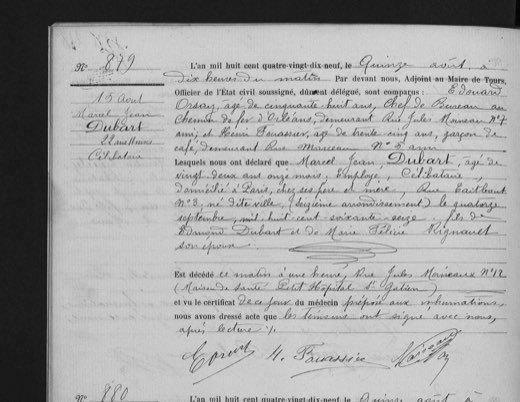
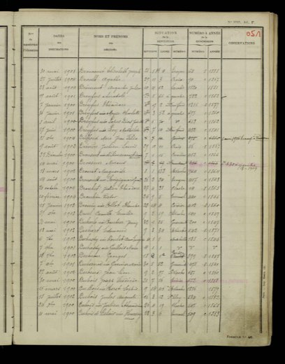
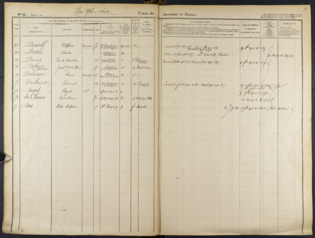
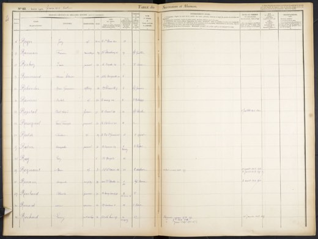
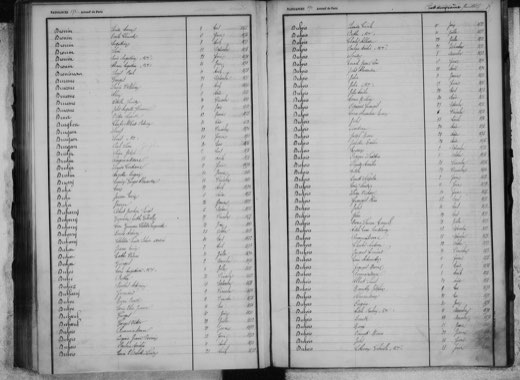

Sosa 4 · Côté Dubart
Edmond Dubart
Né en 1836 à ParisMort en 1903 à Paris
Grand-père de René, côté paternel. Chef de bureau d'agent de change.
Récit
Edmond Dubart naît à Paris, dans le 1er arrondissement, le 17 mai 1836 et est baptisé le 2 juin à Saint-Germain-l'Auxerrois. Ses parents, Louis Charles Ambroise Dubart et Marie Octavie Gibert, vivent rue de l'Échelle ; son parrain est son oncle maternel, Camille Melchior Gibert, et sa marraine sa tante Thaïs Dubart, épouse de ce dernier. Il grandit avec au moins un frère, Charles Alfred, de sept ans son aîné. C'est la Monarchie de Juillet, un régime où l'électorat est restreint par le cens ; la loi Guizot de 1833 a prévu une école primaire par commune, ni obligatoire ni gratuite, mais on ne sait rien de la scolarité d'Edmond (il sait signer, en 1871). Son père, en 1836, s'associe avec Eugène Euchariste Sallé pour une maison de soieries, châles et nouveautés de la rue Vivienne, que l'on retrouve dissoute en 1843, d'un commun accord et sans faillite : il est alors négociant, toujours rue Vivienne, à deux pas de la Bourse. La monarchie tombe en février 1848, quand Edmond a onze ans. Quant à la maison de la rue de l'Échelle, les décrets de 1852 et de 1854 exproprient les maisons de la rue, et elle semble donc avoir disparu quand Edmond a dix-huit ans ; on ignore si sa famille y habitait encore. Octavie Gibert meurt le 9 août 1860, au domicile conjugal de la rue Bleue (9e, nouvelle division de Paris en vingt arrondissements depuis cette année-là), à 52 ans.
Le Second Empire, où Paris est un chantier sous le préfet Haussmann, voit naître le Crédit lyonnais (1863) et la Société générale (1864), puis une loi de 1867 sur les sociétés anonymes. À trente ans, Edmond est employé et vit faubourg Poissonnière, au 104, rue commerçante et de spectacle où se trouvent alors le Conservatoire et le café-concert de l'Alcazar, chez cet oncle et cette tante Gibert ; son père veuf habite la même adresse. Quand le docteur Camille Melchior Gibert, chevalier de la Légion d'honneur, meurt le 30 juillet 1866, c'est Edmond qui, avec son cousin Henri Gibert, va déclarer le décès. Deux ans plus tard, le 9 juillet 1868, à la mairie du 9e, il épouse Marie Félicie Rignault, 21 ans, née à Paris en janvier 1847, qui habite rue Pigalle avec son père, Jean Louis Alexandre Rignault, artiste musicien ; sa mère, Adèle Félicie Bosse, est morte. Les deux pères sont là, le sien consent et signe ; les quatre témoins sont un docteur en médecine, chevalier de la Légion d'honneur (60 ans), un ancien avocat au Conseil d'État (72 ans), un négociant (62 ans) et un agent de change, Philippe Hébert (40 ans). Aucun lien de ces hommes avec les Dubart ni avec les Rignault n'a été trouvé, et rien ne dit qu'Hébert ait été l'employeur d'Edmond. Un contrat a été passé deux jours plus tôt chez un notaire de Paris, mais on n'en connaît pas le contenu.
Edmond est « employé » en 1866, en 1868 et en 1869, sans que l'on sache chez qui. Le couple s'installe aux Batignolles, rue Beudant, dans le 17e : c'est là, d'après l'acte de naissance de leur fils Léon, lu en partie, que naît cet aîné en avril 1869. Les Batignolles, annexés à Paris en 1860, sont un quartier neuf dont l'arrondissement se peuple vite (93 193 habitants en 1866, 101 804 en 1872) ; la gare Saint-Lazare est leur voisine. Paris est assiégé de septembre 1870 à janvier 1871, puis vient la Commune, de mars à mai : on ne sait rien de ce que fait Edmond durant ces mois. En 1871 il est toujours rue Beudant, au 19, que l'acte de décès de la grand-mère de sa femme, Marie Joséphine Gindre, donne aussi pour domicile à celle-ci : il y est dit son « petit-gendre ». Le 12 octobre de la même année, son père meurt à 66 ans, employé de commerce ; Edmond et Charles, tous deux employés de banque, vont le déclarer. La famille acquiert cette année-là, au cimetière de Montmartre, la concession perpétuelle où seront inhumés les parents d'Edmond, puis lui-même.
Entre 1871 et 1897, les actes disent peu de ses domiciles. Selon l'arbre familial, non vérifié, il habite la rue de la Pompe à Passy en 1872 et la rue du Rocher en 1881, et il est « associé d'agent de change » ; aucun acte ne le confirme. Ce que les actes disent est plus mesuré : la feuille matricule de Léon, classe 1889, domicilie ses parents au 17 boulevard Haussmann (date de la mention à préciser), et le second fils du couple, Marcel Jean, naît le 14 septembre 1876 dans le 16e arrondissement, celui de Passy, rattaché à Paris en 1860 ; ce lieu de naissance ne dit pas où habitent alors ses parents. Le boulevard Haussmann, lui, est une voie encore neuve, percée par sections depuis la fin des années 1850 dans le quartier des sièges de banques. Le 15 mars 1895, c'est bien du 17 boulevard Haussmann qu'Edmond, « employé », va déclarer avec son fils Léon, lui aussi employé et qui demeure à l'adresse même du défunt, 47 rue d'Hauteville, le décès de François Émile Rignault, célibataire de 83 ans et frère de son beau-père ; un mot lu « neveu » après son adresse, incertain, le qualifierait de neveu par alliance. Aux autres deuils de la famille dans ces années, Edmond n'est pas parmi les déclarants : ni à la mort de sa tante Colombe Dubart en 1883, ni à celle de son beau-père, Jean Louis Alexandre Rignault, mort à Gisors en 1885, ni à celle de son frère Charles en 1890, que déclarent le fils de celui-ci et un beau-frère. Les actes ne disent pas pourquoi.
Du métier, on sait que les mots changent d'un acte à l'autre : « employé de banque » en 1871 puis en 1900, simplement « employé » en 1895, « chef de bureau d'agent de change » en 1897, « employé d'agent de change » à sa mort. À Paris, un agent de change est un officier ministériel, titulaire d'une charge limitée à soixante jusqu'en 1898, puis à soixante-dix ; il opère à la Bourse, au palais Brongniart, et la loi de 1862 lui permet de s'adjoindre des bailleurs de fonds. La Bourse connaît des secousses dans ces années : l'effondrement de l'Union générale en janvier 1882 touche des agents de change, la chute du Comptoir d'escompte suit en 1889 ; aucun document ne lie Edmond à l'une ou l'autre. Sous l'agent, les textes de l'époque distinguent des commis principaux, des fondés de pouvoir et des commis de charge ; « chef de bureau » n'est pas un titre réglementaire dans ces maisons, et l'on ne sait pas ce que le mot recouvre exactement. On ne sait pas pour quel agent Edmond travaille, ni s'il a été autre chose qu'un employé.
Au printemps 1897, le couple demeure au 3 rue Taitbout, dans le 9e : le banquier Bischoffsheim est au même numéro vers 1887, et un cabinet d'agent de change est installé au 5. C'est de là qu'il envoie, le 27 avril, le faire-part du mariage de Léon avec Jeanne Augustine Baron Marchal ; Léon se remariera en 1923 avec Solange Gasnier. En 1900, l'année de l'Exposition universelle et de la première ligne du métro, Edmond, 63 ans, employé de banque, est témoin de la naissance de son petit-fils René, fils de Léon : le lien n'est pas écrit, il est déduit. Entre-temps, Marcel Jean, domicilié chez ses parents rue Taitbout, est mort à Tours, à 22 ans, le 15 août 1899 ; son acte de décès, déclaré par deux amis, le dit fils d'Edmond et de Marie Félicie Rignault.
Edmond meurt le 10 mai 1903 à 22 h, au 66 rue des Plantes (14e), alors qu'il est domicilié rue Taitbout. L'acte le dit employé d'agent de change, marié à Marie Félicie, et fils de Charles Ambroise Dubart et de Marie Octavie Gibert, décédés. Il ne dit pas pourquoi il meurt hors de chez lui. Le 66 rue des Plantes, dans le Petit-Montrouge annexé en 1860, est depuis 1878 le site d'un établissement religieux, Notre-Dame de Bon-Secours, auquel un hôpital a été adjoint en 1880 ; selon des sources non vérifiées, c'est là qu'il meurt, et l'on ne sait pas si cet hôpital recevait alors des hommes. Il est inhumé le 13 mai à Montmartre, dans la concession familiale. Sa succession laisse une trace : un inventaire en juillet 1903 et une déclaration en octobre, dont on ignore le contenu. Marie Félicie, sa veuve, domiciliée boulevard Saint-Denis, meurt le 18 février 1918 ; elle est inhumée à Montmartre le 21, dans la même concession 542, et sa succession est inscrite aux tables du 9e bureau, avec deux déclarations en août 1918 et janvier 1919 dont on ignore le contenu. On ne sait pas où il a appris son métier, ni à quelle date ni pour qui il l'a exercé, ni quelles adresses furent les siennes entre 1871 et 1895.
Contexte : recherches/generation-4/dubart-edmond/contexte-historien.md ; recherches/generation-4/dubart-edmond/contexte-historien-2.md ; recherches/generation-4/dubart-edmond/contexte-historien-3-politique.md ; recherches/generation-4/dubart-edmond/contexte-historien-3-lieux.md.
Récit rédigé le 9 novembre 2026 à partir de la base, qui fait foi. Chaque marque ouvre la preuve du passage.
Famille
Frères et sœurs
Autres liens dits par les actes
- Edouard Jean "René" DUBART — Edmond est « grand-père paternel » de cette personne
- Marie Josephine GINDRE — Edmond est « petit-gendre » de cette personne
- Camille Melchior GIBERT — Edmond est « neveu » de cette personne (déclarant)
- Camille Melchior GIBERT — oncle
- Camille Melchior GIBERT — oncle (témoin)
- Marie Françoise Thais DUBART — tante
- Marie Françoise Thais DUBART — tante (témoin)
- François Emile RIGNAULT — neveu (lecture incertaine)
Sa vie dans le temps
- Monarchie de Juillet
- Edmond Dubart, né le 17 mai 1836, est baptisé le 2 juin 1836 à Saint-Germain-l'Auxerrois ; ses parents Louis Charles Ambroise Dubart et Marie Octavie Gibert demeurent 4 rue de l'Échelle … — Paris vérifié
- Baptême : paroisse de Saint Germain l'Auxerrois (Paris) — selon l'arbre transmis — Paris non vérifié
- Le n° 35 de la rue Bleue existait en 1845-1846 (Renault (Hip.), architecte-expert près les tribunaux ; Percier ; Berthet (Elie)) et figure dans une liste de membres de la Société des ingénieurs civils (Geyler, Huet) dont la date … — Paris vérifié
- Second Empire
- Selon Wikipédia, la rue de l'Échelle (1er) a été élargie en 1852 entre les rues Saint-Honoré et de Rivoli et prolongée en 1866 jusqu'à l'avenue de l'Opéra ; elle existe toujours — Paris non vérifié
- Selon Wikipédia, la rue Taitbout (9e) a été formée de trois tronçons réunis en 1853 et passe, au XIXe siècle, pour une rue de financiers ; l'article ne dit rien du n° 3 — Paris non vérifié
- Domicile : 35 rue Bleue à Paris au décès de sa mère — selon l'arbre transmis non vérifié
- L'almanach impérial de 1861 porte, parmi les agents de change de Paris, « Hébert — Hubert, rue Notre-Dame-des-Victoires, 14 » — Paris vérifié
- Le cabinet du 14 rue Notre-Dame-des-Victoires est tenu par un Hébert en 1861 (successeur de Hubert), puis, dans les éditions lues de 1869 à 1876, par un Hébert qui a succédé à son frère ; Philippe Hébert (1864) serait le second — Paris partiellement vérifié
- Selon Wikipédia, la rue Beudant (17e), ancienne rue Fortin de la commune des Batignolles, a été rattachée à la voirie de Paris par décret du 23 mai 1863 et nommée rue Beudant par décret du 24 août 1864 — Paris non vérifié
- Le Guide financier de 1864 (p. 49) range « HÉBERT (Philippe), rue Notre-Dame-des-Victoires, 14 » dans la liste des agents de change près la bourse de Paris — Paris vérifié
- Les archives historiques de la Société générale conservent des dossiers du personnel depuis la création de la banque en 1864, consultables sur place, sur rendez-vous, par des chercheurs sur justification — Paris non vérifié
- En juillet 1866, Edmond Dubart, fils de Louis, 30 ans, employé, demeure 104 rue du Faubourg-Poissonnière, adresse du domicile conjugal de son oncle Camille Melchior Gibert (époux de sa tante Thaïs Dubart) — Paris vérifié
- Hypothèse : le M. Valton, ancien avocat au Conseil d'État, de Boulogne-sur-Seine (1853-1855) pourrait être Pierre Valton, 72 ans en 1868, témoin du mariage d'Edmond ; aucun lien avec les Dubart ni les Rignault n'en découle — Paris non vérifié
- Domicile : 104 rue du Faubourg Poissonière à Paris — selon l'arbre transmis non vérifié
- Le contrat de mariage d'Edmond Dubart et de Marie Félicie Rignault est reçu le 7/07/1868 par Me Paul Huillier (étude VI) : répertoire n° 452, en minute, « Dubart (entre M. … — Paris vérifié
- Le 9 juillet 1868, à la mairie du 9e, Edmond Dubart, employé, 32 ans, né Paris 1er le 17/05/1836, demeurant 104 rue du Faubourg-Poissonnière avec son père, épouse Marie Félicie Rignault, 21 ans, née Paris 3e en janvier 1847, … — Paris vérifié
- Mariage du 9 juillet 1868 : les quatre témoins sont Joseph Éléonor Pressat [?], docteur en médecine, chevalier de la Légion d'honneur, 60 ans, 13 rue Richepance … — Paris partiellement vérifié
- Hypothèse : Edmond Dubart a pu être employé, entre 1868 et 1876, dans le cabinet de l'agent de change Hébert (14 rue Notre-Dame-des-Victoires), témoin à son mariage — Paris non vérifié
- Le domicile des parents de Léon à sa naissance (1869) est rue « Bendant » [Beudant ?] n° 19 (lecture probable), Paris 17e. — Paris partiellement vérifié
- Léon DUBART est le fils légitime d'Edmond DUBART et de Marie Félicie RIGNAULT. — Paris vérifié
- En avril 1869, Edmond DUBART a 32 ans et est « employé ». — Paris vérifié
- Dans la table décennale des naissances du 17e arrondissement 1860-1872, « Dubart Léon » est inscrit au 20 avril 1869 ; la même page porte deux autres Dubart (1861, 1863) nés avant le mariage d'Edmond, sans lien établi — Paris vérifié
- Dans les almanachs officiels de 1869, 1870 et 1876 (texte OCR), un seul Hébert figure parmi les agents de change de Paris : « Hébert — Hébert, son frère, rue Notre-Dame-des-Victoires, 14 » — Paris vérifié
- Troisième République
- Le catalogue du Salon de 1870 donne « MARGARITA (Antonio), né aux Gobelins, élève de Cicéri. Rue Beudant, 19 » (n° 3768, « Sous-bois ; fusain ») — Paris vérifié
- Domicile : 19 rue Beudant à Paris, adresse de la mère de Marie Félicie morte en 1871 (Paris, 17ème) — selon l'arbre transmis — Paris non vérifié
- La liste des représentants à l'Assemblée nationale d'août 1871 porte « ACLOCQUE, Ariège, rue de la Pompe, 19 » non résolu
- Hypothèse : Edmond Dubart demeure rue Beudant n° 19 depuis 1869, adresse que la transcription de l'acte de naissance de Léon Dubart (1869, lot B2) donne sous la forme « rue Bendant 19 ». — Paris non vérifié
- Domicile : 19 rue de la Pompe / Passy — selon l'arbre transmis non vérifié
- Entre les trois entrées de tables décennales laissées non rattachées en A0722, celle du 8e (Dubard Georges) est une naissance de mars 1873 (non 1881) et se rapporte à Constance Dubard (A0735) … — Paris non résolu
- Les parents de Marcel Jean (Edmond Dubart et Marie Félicie Rignault) pourraient avoir demeuré dans le 16e (Passy) en septembre 1876 — Paris non vérifié
- Domicile : 31 rue du Rocher Paris 8ème — selon l'arbre transmis non vérifié
- Dans l'almanach national de 1885-1886, un Hébert (adresse tronquée « boulevard M... ») figure parmi les agents de change honoraires ; il n'y a plus de Hébert dans la liste des agents de change en charge de 1891 ni de 1885-1886 — Paris partiellement vérifié
- Dans l'almanach national de 1885-1886, l'agent de change Blin (Alex. A.), successeur de Ramel, a son cabinet 5 rue Taitbout ; l'almanach de 1902 porte « Brisset — Blin, rue Taitbout, 5 » — Paris vérifié
- L'Almanach national de 1892 donne Ernest Rousseau, inspecteur général de 2e classe des Ponts et chaussées (6e inspection), « rue de la Pompe, 19, à Passy » — Paris vérifié
- Domicile : 17 boulevard Haussmann à Paris — selon l'arbre transmis non vérifié
- En mars 1895, Edmond Dubart est « employé » et demeure 17 boulevard Haussmann (acte de décès de François Émile Rignault) — Paris vérifié
- Après l'adresse d'Edmond, l'acte de 1895 porte un mot lu « neveu » [?], qui qualifierait Edmond (neveu par alliance de François Émile, époux de la fille de son frère Jean Louis Alexandre) — Paris non vérifié
- En 1897, Edmond Dubart est « chef de bureau d'agent de change » ; Edmond et Marie Félicie Rignault demeurent 3 rue Taitbout, Paris. vérifié
- Le faire-part du 27/04/1897 émis de Paris par M. et Mme Edmond Dubart (3 rue Taitbout) annonce le mariage de « Monsieur Léon Dubart, leur fils » avec Mademoiselle Augustine Baron. — Paris partiellement vérifié
- Hypothèse : le « chef de bureau d'agent de change » de 1897 (3 rue Taitbout) a pu travailler pour l'agent de change dont le cabinet est au 5 rue Taitbout (Blin, puis Brisset) — Paris non vérifié
- Le 66 rue des Plantes (14e), où Edmond meurt, serait l'adresse de l'hôpital Notre-Dame de Bon-Secours ; Wikipédia dit aujourd'hui « No 68 : entrée principale de l'hôpital » — Paris non vérifié
- Domicile : 3 rue Taitbout à Paris (selon acte de mariage de leur fils Léon) (?, 9ème) — selon l'arbre transmis non vérifié
- Selon l'acte de décès de Marcel Jean Dubart (Tours, 15/08/1899), il est « fils de Edmond Dubart et de Marie Félicie Rignault son épouse », domicilié « chez ses père et mère, rue Taitbout n° 3 », né « (seizième arrondissement) le … — Tours vérifié
- Doniol (1902) cite pour la rue de la Pompe les n° 7, 9 (hôtel où meurt Ponsard en 1867), 11 (chalet de Jules Janin, 1856-1874), « l'ancien n° 24 » (Rossini vers 1857), 35 (Bertinot, 1856-1859) et 75 (Crémieux, 1873) … — Paris non vérifié
- Edmond DUBART est décédé le 10/05/1903 à 22 h, rue des Plantes n° 66 (Paris 14e) ; il était domicilié rue Taitbout n° 3. — Paris vérifié
- Edmond DUBART avait 66 ans à son décès (lecture « soixante dix » de l'original corrigée par la transcription du 9e arr.). — Paris vérifié
- À son décès (1903), Edmond DUBART est « employé d'agent de change ». — Paris vérifié
- Edmond DUBART est le fils de Charles Ambroise DUBART (sans « Louis » dans l'acte) et de Marie Octavie GIBERT, décédés. — Paris vérifié
- À son décès en 1903, Edmond DUBART est marié à Marie Félicie RIGNAULT, 56 ans, sans profession. — Paris vérifié
- Edmond Dubart figure au n° 50 de la table des successions et absences du 8e bureau (mois de mai 1903) : 66 ans, décédé le 10 [mai], lieu du décès « 66 R. des Plantes » et domicile « 3 R. … — Paris vérifié
- Edmond Dubart est inhumé le 13 mai 1903 au cimetière de Montmartre, 9e division, 3e ligne, n° 24, dans la concession perpétuelle n° 542 de 1871 (celle de son père Louis et de sa mère Octavie) — Paris vérifié
- Pour la succession d'Edmond Dubart, la table du 8e bureau note « Inventaire juillet 1903 n° 86 », « Retrait (Mars 1904, 81) » et une déclaration du 12 octobre 1903 sous le n° 1244 (puis une mention du 7 [novembre ?] 1904 n° 1628) — Paris partiellement vérifié
- Selon Wikipédia, la rue Bleue (9e), ancienne rue d'Enfer, a vu le tronçon entre les rues Cadet et La Fayette détaché en 1911 et rattaché à la rue La Fayette ; la rue actuelle ne compte plus que jusqu'au n° 29 — Paris non vérifié
- Marie Félicie Rignault, veuve Dubart, est inscrite sous le nom « Regnaut Marie », sans profession, 71 ans, boulevard Saint-Denis 22, « V. … — Paris partiellement vérifié
- À son décès (1918), Marie Félicie RIGNAULT est veuve d'Edmond DUBART et domiciliée boulevard Saint-Denis n° 22 (Paris). — Paris vérifié
- En juin 1923, Léon DUBART a 54 ans, est représentant de commerce, domicilié 28 boulevard Bonne-Nouvelle, et fils d'Edmond DUBART et de Marie Félicie RIGNAULT, décédés. — Paris vérifié
- Guerre et Libération
- À son décès, Léon DUBART est dit fils d'Edmond DUBART et de Marie Félicie RIGNAULT, décédés, et né à Paris (17e) le 18/04/1869. — Paris vérifié
- Cinquième République
- La majeure partie des archives de la Compagnie des agents de change de Paris a rejoint en 2007-2008 le Centre des archives économiques et financières (CAEF) du ministère de l'Économie … — Savigny-le-Temple non vérifié
- Troisième République
- Un banquier nommé Bischoffsheim est domicilié « rue Taitbout, 3 » dans la liste des membres de la Société mathématique de France (volume 16, admissions jusqu'à 1887) — Paris vérifié
Lieux
- Paris 64 mentions
- Savigny-le-Temple 1 mention
Documents (71)









Autres sources citées
- Annuaire des lettres, des arts et des théâtres, 1845-1846 : Renault (Hip.), arch. exp., rue Bleue, 35 Annuaire, almanach · Internet Archive (copie numérique) · annuairedeslettr00pari
- Almanach impérial 1861, « Agents de change à Paris » Annuaire, almanach · Internet Archive (copie numérique) · sc_038718200_1861
- Mémoires de la Société des ingénieurs civils de France, liste des membres : Geyler et Huet, rue Bleue, 35 Annuaire, almanach · Internet Archive (copie numérique) · mmoires64frangoog
- Almanach impérial 1869, « Agents de change à Paris », p. 1218-1219 Annuaire, almanach · Internet Archive (copie numérique) · sc_038718200_1869
- J. Grenet, Boulogne, son histoire et ses institutions (Paris, Schiller, avril 1869) Livre, ouvrage · Internet Archive (Harvard) · bub_gb_RS4bAAAAYAAJ
- Almanach impérial 1870, « Agents de change à Paris » Annuaire, almanach · Internet Archive (copie numérique) · sc_038718200_1870
- Explication des ouvrages de peinture [...] Salon de 1870 : Margarita (Antonio), rue Beudant, 19 Livre, ouvrage · Internet Archive (copie numérique) · explicationdesou1870soci
- Liste de messieurs les représentants à l'Assemblée nationale par ordre alphabétique et par départements (août 1871) Livre, ouvrage · Internet Archive (UBC) · listedemessieurs00fran
- Almanach national 1876, « Agents de change à Paris » Annuaire, almanach · Internet Archive (copie numérique) · sc_038718219_1876
- Almanach national 1885-1886, « Agents de change à Paris » (Blin, rue Taitbout 5 ; agents honoraires) Annuaire, almanach · Internet Archive (copie numérique) · sc_038718219_1885-1886
- Bulletin de la Société mathématique de France, t. 16, liste des membres : Bischoffsheim, banquier, rue Taitbout, 3 Livre, ouvrage · Internet Archive (copie numérique) · bulletinsoci16soci
- Almanach national 1891, « Agents de change à Paris » (absence de Hébert) Annuaire, almanach · Internet Archive (copie numérique) · sc_038718219_1891
- Almanach national : annuaire officiel de la République Française pour 1892, liste des inspecteurs généraux des Ponts et chaussées Annuaire, almanach · Internet Archive (Bibliothèque nationale) · sc_038718219_1892
- Paris charitable et prévoyant, 1897 : Hôpital de Notre-Dame de Bon Secours, rue des Plantes, 66 (extrait de moteur Internet Archive non … Annuaire, almanach · Internet Archive (copie numérique) · BIUSante_22696x01
- Almanach national 1902, « Agents de change à Paris » (Brisset — Blin, rue Taitbout 5) Annuaire, almanach · Internet Archive (copie numérique) · sc_038718219_1902
- Encyclopédie municipale de la Ville de Paris, 1902 : Hôpital de Notre-Dame de Bon-Secours, rue des Plantes, 66, fondé par l'abbé Carton … Livre, ouvrage · Internet Archive (copie numérique) · encyclopedie-municipale-de-la-ville-de-paris
- Auguste Doniol, Histoire du XVIe arrondissement de Paris (notice « Rue de la Pompe », pp. 55-59 environ) Livre, ouvrage · Internet Archive (copie Google) · histoireduxviea00donigoog
- Base Mérimée PA00086010, Palais Brongniart (Bourse) : agrandissement 1899-1903, bail emphytéotique à la Compagnie des agents de change Site web · POP / Mérimée · PA00086010
- Notice HAL/RePEc halshs-01516995 : Lagneau-Ymonet, Rezaee, Riva, « Aux sources de l'histoire des professions boursières : les archives du … Site web · IDEAS (ideas.repec.org) · halshs-01516995
- Wikipédia, « Rue Beudant » Site web · Wikipédia
- Wikipédia, « Rue Bleue (Paris) » Site web · Wikipédia
- Wikipédia, « Rue de l'Échelle (Paris) » Site web · Wikipédia
- Wikipédia, « Rue Taitbout » Site web · Wikipédia
- Wikipédia, « Rue des Plantes (Paris) » Site web · Wikipédia
- Wikipédia, « Rue Pigalle » Site web · Wikipédia
- Diocèse de Paris, Notre-Dame de Bon-Secours Site web
- Mariage de Jean Louis Alexandre Rignault et Adèle Félicie Bosse, Paris 6e ancien, novembre 1844 (acte rétabli en vertu de la loi du 12 … Acte d'état civil · Archives de Paris (état civil reconstitué)
- Décès de Marie Joséphine Gindre, veuve Bosse, Paris 17e, acte du 10 octobre 1871 Acte d'état civil · Archives de Paris · V4E 4723
- Faire-part de mariage de Léon Dubart et Mademoiselle Augustine Baron, envoyé par M. … Document de famille · Famille Robert
- Décès de Charles DUBART, Paris 17e arr., 26/06/1890 (acte dressé le 27/06/1890) Acte d'état civil · Archives de Paris · V4E 7490
- Décès d'Edmond DUBART, Paris 14e arr., 10/05/1903 (acte dressé le 12/05/1903) Acte d'état civil · Archives de Paris · 14D 202
- Transcription au 9e arr. (26/06/1903) de l'acte de décès d'Edmond DUBART Acte d'état civil · Archives de Paris · 9D 97
- Décès de Marie Félicie RIGNAULT, veuve DUBART, Paris 10e arr., 18/02/1918 Acte d'état civil · Archives de Paris · 10D 368
- Naissance de Léon DUBART, Paris 17e arr., acte dressé le 20/04/1869 Acte d'état civil · Archives de Paris · V4E 2064
- Naissance d'Édouard Jean René DUBART, Paris 2e arr., acte dressé le 20/01/1900 (avec mentions marginales de mariage 1922 et de décès 1994) Acte d'état civil · État civil de Paris 2e arr. (dépôt non visible sur l'image)
- Registre matricule de Léon DUBART, classe 1889, n° matricule 1452, 9e arr. de Paris Dossier militaire · Archives de Paris (registres matricules)
- Décès de Léon DUBART, Paris 15e arr., 11/05/1944 (acte dactylographié) Acte d'état civil · Archives de Paris · 15D 399
- Mariage de Léon DUBART et Solange GASNIER, Paris 12e arr., 02/06/1923 : photocopie conforme délivrée le 15/06/2011 Acte d'état civil · Mairie du 12e arrondissement de Paris (copie)
- Notices SIV : notaire Achille Descours (FRAN_NP_012407, étude CXI, 25/07/1846-11/09/1860, 1 rue de Provence) … Inventaire d'archives · Archives nationales (SIV) · FRAN_NP_012407 ; FRAN_IR_043312 ; FRAN_IR_041232
- Archives historiques Société générale : présentation des fonds (PDF, 5 p.) Dossier administratif · Société générale (site)
Ce qu'on ignore
Aucun recensement nominatif de Paris pour la période 1876-1901 n'existe en ligne aux Archives de Paris : les listes nominatives ne sont annoncées que pour 1926, 1931, 1936 et 1946
recherche infructueuse Ne prouve pas l'absence de dénombrements statistiques par quartier en salle de lecture ; domiciles d'Edmond entre 1871 et 1897 restent non établis par recensement · A0696
Le dossier de recrutement militaire d'Edmond Dubart (classe 1856, tirage au sort de 1857 à Paris) n'est pas dans les séries mises en ligne par les Archives de Paris (listes du contingent classes …
recherche infructueuse La classe de recrutement d'Edmond (1856) est déduite de sa naissance en 1836 ; numéro de tirage, remplacement éventuel et exemption inconnus ; les listes de tirage de 1857 peuvent exister en salle de lecture · A0697
Philippe Hébert, agent de change, âgé de 40 ans en 1868 et domicilié rue [?] n° 4 [?], témoin au mariage d'Edmond : aucune mention de lui (charge, adresse, employés) n'a pu être consultée dans un …
recherche infructueuse Un résultat négatif de recherche ne dit pas que Hébert n'était pas agent de change ni que Edmond n'était pas à son service ; aucun lien d'emploi n'est établi · A0698
Aucune source lue n'apprend ce qu'étaient en 1836 le n° 4 de la rue de l'Échelle ni la planche de l'Atlas Vasserot qui le montre : la rue n'est pas indexée dans le moteur des plans parcellaires
recherche infructueuse Les planches du quartier Tuileries (F/31/73/30 à 48) n'ont pas été toutes ouvertes ; le n° 4 est peut-être sur une planche du quartier du Palais-Royal ; absence d'index ne prouve pas l'absence de planche · A0715
Aucune source lue ne décrit le 104 rue du Faubourg-Poissonnière (10e) au XIXe siècle : Wikipédia ne note que le n° 106 (maison de Dietrich, puis lycée Rocroy-Saint-Léon ouvert en 1877)
recherche infructueuse Un extrait de moteur non ouvert signale un professeur de cor au Conservatoire à cette adresse en 1832 : non compté ; recherche par cadastre, annuaires et plan parcellaire non faite pour ce numéro · A0716
Aucune source lue ne décrit le 22 boulevard Saint-Denis, adresse de la veuve d'Edmond en 1918
recherche infructueuse Un extrait de moteur non ouvert (Courrier cinématographique, 1918, « 28, boulevard Saint-Denis (22) ») ne concerne pas nécessairement ce numéro : non compté · A0718
Aucun « Dubart » n'a été lu dans les tables décennales des naissances 1873-1882 du 17e (page 12) ni du 9e (page 5)
recherche infructueuse Un enfant déclaré sous une autre graphie ou dans un autre arrondissement n'est pas exclu ; 18 arrondissements non lus pour cette décennie · A0721
Trois entrées de tables décennales ne sont pas rattachées à Edmond : 8e « Dubard Georges » 03/03/1881 ; 17e « Dubart Lucien Charles André[?] » 16/12/188[?] …
contredit Il peut s'agir d'enfants d'autres Dubart, dont Charles Alfred, frère d'Edmond (le 8e 1881 est aussi l'arrondissement de la rue du Rocher que l'arbre donne en 1881) : à trancher sur les actes … · A0722
Aucun Dubard ni Dubart n'est inscrit entre « Duband » et « Dubec » dans la table décennale des naissances du 16e arrondissement 1860-1872 (page 20 du volume « C… à D… »)
recherche infructueuse Page de droite lue à partir de Dubey seulement ; un enfant inscrit sous une autre graphie n'est pas exclu ; exclut seulement une naissance 1860-1872 au 16e sous ce nom · A0727
Aucun Rignault n'est inscrit entre « Rigaux » et « Rigueault » dans la table décennale des naissances du 16e arrondissement 1860-1872
recherche infructueuse Volume 1873-1882 (lettre R) non lu ; un autre arrondissement ou une autre graphie ne sont pas exclus · A0728
La liste des représentants à l'Assemblée nationale d'août 1871 porte « ACLOCQUE, Ariège, rue de la Pompe, 19 »
non résolu Ni la ville ni l'immeuble ne sont établis ; aucun lien avec Edmond · A0733
Aucun document lu ne dit qui habitait le 19 rue de la Pompe (Passy) vers 1872, ni que ce soit Edmond Dubart
recherche infructueuse Les annuaires Didot-Bottin et les listes électorales de Passy des années 1870 n'ont pas été ouverts (Gallica bloqué, pas dans l'index plein texte d'Internet Archive) ; l'absence ne prouve rien · A0734
Entre les trois entrées de tables décennales laissées non rattachées en A0722, celle du 8e (Dubard Georges) est une naissance de mars 1873 (non 1881) et se rapporte à Constance Dubard (A0735) …
non résolu Les registres du 17e 1883-1892 n'ont pas été localisés ; ni mère ni père lus ; la lecture de l'année de « Lucien Charles André » reste incertaine ; un enfant déclaré ailleurs n'est pas exclu · A0736
Aucun lien documenté n'a été trouvé entre les témoins de 1868 (Pressat, Valton, Hébert, Cary) et les Dubart-Gibert ou les Rignault : base Léonore non interrogeable (application web), recherche plein …
recherche infructueuse Léonore, Gallica, annuaires du commerce et Journal officiel non dépouillés ; absence de résultat ne prouve rien · A0741
Continuer l'exploration
Dossier complet : toutes les informations et leurs sources
Sosa 4.
Biographie
Récit rédigé le 2026-11-09 à partir de la base, qui fait foi. Les crochets renvoient aux assertions (onglet Toutes les informations).
Edmond Dubart naît à Paris, dans le 1er arrondissement, le 17 mai 1836 et est baptisé le 2 juin à Saint-Germain-l'Auxerrois. Ses parents, Louis Charles Ambroise Dubart et Marie Octavie Gibert, vivent rue de l'Échelle ; son parrain est son oncle maternel, Camille Melchior Gibert, et sa marraine sa tante Thaïs Dubart, épouse de ce dernier. Il grandit avec au moins un frère, Charles Alfred, de sept ans son aîné. C'est la Monarchie de Juillet, un régime où l'électorat est restreint par le cens ; la loi Guizot de 1833 a prévu une école primaire par commune, ni obligatoire ni gratuite, mais on ne sait rien de la scolarité d'Edmond (il sait signer, en 1871). Son père, en 1836, s'associe avec Eugène Euchariste Sallé pour une maison de soieries, châles et nouveautés de la rue Vivienne, que l'on retrouve dissoute en 1843, d'un commun accord et sans faillite : il est alors négociant, toujours rue Vivienne, à deux pas de la Bourse. La monarchie tombe en février 1848, quand Edmond a onze ans. Quant à la maison de la rue de l'Échelle, les décrets de 1852 et de 1854 exproprient les maisons de la rue, et elle semble donc avoir disparu quand Edmond a dix-huit ans ; on ignore si sa famille y habitait encore. Octavie Gibert meurt le 9 août 1860, au domicile conjugal de la rue Bleue (9e, nouvelle division de Paris en vingt arrondissements depuis cette année-là), à 52 ans. [A0257, A0213, A0217, A0218, A0236, A0239, A0240, A0714]
Le Second Empire, où Paris est un chantier sous le préfet Haussmann, voit naître le Crédit lyonnais (1863) et la Société générale (1864), puis une loi de 1867 sur les sociétés anonymes. À trente ans, Edmond est employé et vit faubourg Poissonnière, au 104, rue commerçante et de spectacle où se trouvent alors le Conservatoire et le café-concert de l'Alcazar, chez cet oncle et cette tante Gibert ; son père veuf habite la même adresse. Quand le docteur Camille Melchior Gibert, chevalier de la Légion d'honneur, meurt le 30 juillet 1866, c'est Edmond qui, avec son cousin Henri Gibert, va déclarer le décès. [A0251, A0252, A0259] Deux ans plus tard, le 9 juillet 1868, à la mairie du 9e, il épouse Marie Félicie Rignault, 21 ans, née à Paris en janvier 1847, qui habite rue Pigalle avec son père, Jean Louis Alexandre Rignault, artiste musicien ; sa mère, Adèle Félicie Bosse, est morte. Les deux pères sont là, le sien consent et signe ; les quatre témoins sont un docteur en médecine, chevalier de la Légion d'honneur (60 ans), un ancien avocat au Conseil d'État (72 ans), un négociant (62 ans) et un agent de change, Philippe Hébert (40 ans). Aucun lien de ces hommes avec les Dubart ni avec les Rignault n'a été trouvé, et rien ne dit qu'Hébert ait été l'employeur d'Edmond. Un contrat a été passé deux jours plus tôt chez un notaire de Paris, mais on n'en connaît pas le contenu. [A0258, A0259, A0548, A0698, A0737, A0741]
Edmond est « employé » en 1866, en 1868 et en 1869, sans que l'on sache chez qui. Le couple s'installe aux Batignolles, rue Beudant, dans le 17e : c'est là, d'après l'acte de naissance de leur fils Léon, lu en partie, que naît cet aîné en avril 1869. [A0390, A0389, A0388, A0720] Les Batignolles, annexés à Paris en 1860, sont un quartier neuf dont l'arrondissement se peuple vite (93 193 habitants en 1866, 101 804 en 1872) ; la gare Saint-Lazare est leur voisine. Paris est assiégé de septembre 1870 à janvier 1871, puis vient la Commune, de mars à mai : on ne sait rien de ce que fait Edmond durant ces mois. En 1871 il est toujours rue Beudant, au 19, que l'acte de décès de la grand-mère de sa femme, Marie Joséphine Gindre, donne aussi pour domicile à celle-ci : il y est dit son « petit-gendre ». Le 12 octobre de la même année, son père meurt à 66 ans, employé de commerce ; Edmond et Charles, tous deux employés de banque, vont le déclarer. La famille acquiert cette année-là, au cimetière de Montmartre, la concession perpétuelle où seront inhumés les parents d'Edmond, puis lui-même. [A0317, A0318, A0240, A0695]
Entre 1871 et 1897, les actes disent peu de ses domiciles. Selon l'arbre familial, non vérifié, il habite la rue de la Pompe à Passy en 1872 et la rue du Rocher en 1881, et il est « associé d'agent de change » ; aucun acte ne le confirme. Ce que les actes disent est plus mesuré : la feuille matricule de Léon, classe 1889, domicilie ses parents au 17 boulevard Haussmann (date de la mention à préciser), et le second fils du couple, Marcel Jean, naît le 14 septembre 1876 dans le 16e arrondissement, celui de Passy, rattaché à Paris en 1860 ; ce lieu de naissance ne dit pas où habitent alors ses parents. Le boulevard Haussmann, lui, est une voie encore neuve, percée par sections depuis la fin des années 1850 dans le quartier des sièges de banques. Le 15 mars 1895, c'est bien du 17 boulevard Haussmann qu'Edmond, « employé », va déclarer avec son fils Léon, lui aussi employé et qui demeure à l'adresse même du défunt, 47 rue d'Hauteville, le décès de François Émile Rignault, célibataire de 83 ans et frère de son beau-père ; un mot lu « neveu » après son adresse, incertain, le qualifierait de neveu par alliance. Aux autres deuils de la famille dans ces années, Edmond n'est pas parmi les déclarants : ni à la mort de sa tante Colombe Dubart en 1883, ni à celle de son beau-père, Jean Louis Alexandre Rignault, mort à Gisors en 1885, ni à celle de son frère Charles en 1890, que déclarent le fils de celui-ci et un beau-frère. Les actes ne disent pas pourquoi. [AR0036, AR0037, AR0177, AR0031, A0394, A0724, A0723, A0747, A0748, A0749, A0746, A0750, A0751, A0753, A0754]
Du métier, on sait que les mots changent d'un acte à l'autre : « employé de banque » en 1871 puis en 1900, simplement « employé » en 1895, « chef de bureau d'agent de change » en 1897, « employé d'agent de change » à sa mort. À Paris, un agent de change est un officier ministériel, titulaire d'une charge limitée à soixante jusqu'en 1898, puis à soixante-dix ; il opère à la Bourse, au palais Brongniart, et la loi de 1862 lui permet de s'adjoindre des bailleurs de fonds. La Bourse connaît des secousses dans ces années : l'effondrement de l'Union générale en janvier 1882 touche des agents de change, la chute du Comptoir d'escompte suit en 1889 ; aucun document ne lie Edmond à l'une ou l'autre. Sous l'agent, les textes de l'époque distinguent des commis principaux, des fondés de pouvoir et des commis de charge ; « chef de bureau » n'est pas un titre réglementaire dans ces maisons, et l'on ne sait pas ce que le mot recouvre exactement. On ne sait pas pour quel agent Edmond travaille, ni s'il a été autre chose qu'un employé. [A0012, A0383, A0405, A0747]
Au printemps 1897, le couple demeure au 3 rue Taitbout, dans le 9e : le banquier Bischoffsheim est au même numéro vers 1887, et un cabinet d'agent de change est installé au 5. C'est de là qu'il envoie, le 27 avril, le faire-part du mariage de Léon avec Jeanne Augustine Baron Marchal ; Léon se remariera en 1923 avec Solange Gasnier. En 1900, l'année de l'Exposition universelle et de la première ligne du métro, Edmond, 63 ans, employé de banque, est témoin de la naissance de son petit-fils René, fils de Léon : le lien n'est pas écrit, il est déduit. [A0012, A0359, A0010, A0457, A0405, A0406] Entre-temps, Marcel Jean, domicilié chez ses parents rue Taitbout, est mort à Tours, à 22 ans, le 15 août 1899 ; son acte de décès, déclaré par deux amis, le dit fils d'Edmond et de Marie Félicie Rignault. [A0724]
Edmond meurt le 10 mai 1903 à 22 h, au 66 rue des Plantes (14e), alors qu'il est domicilié rue Taitbout. L'acte le dit employé d'agent de change, marié à Marie Félicie, et fils de Charles Ambroise Dubart et de Marie Octavie Gibert, décédés. Il ne dit pas pourquoi il meurt hors de chez lui. Le 66 rue des Plantes, dans le Petit-Montrouge annexé en 1860, est depuis 1878 le site d'un établissement religieux, Notre-Dame de Bon-Secours, auquel un hôpital a été adjoint en 1880 ; selon des sources non vérifiées, c'est là qu'il meurt, et l'on ne sait pas si cet hôpital recevait alors des hommes. Il est inhumé le 13 mai à Montmartre, dans la concession familiale. Sa succession laisse une trace : un inventaire en juillet 1903 et une déclaration en octobre, dont on ignore le contenu. Marie Félicie, sa veuve, domiciliée boulevard Saint-Denis, meurt le 18 février 1918 ; elle est inhumée à Montmartre le 21, dans la même concession 542, et sa succession est inscrite aux tables du 9e bureau, avec deux déclarations en août 1918 et janvier 1919 dont on ignore le contenu. On ne sait pas où il a appris son métier, ni à quelle date ni pour qui il l'a exercé, ni quelles adresses furent les siennes entre 1871 et 1895. [A0381, A0383, A0385, A0384, A0100, A0719, A0695, A0693, A0694, A0366, A0365, A0757, A0755]
Contexte : recherches/generation-4/dubart-edmond/contexte-historien.md ; recherches/generation-4/dubart-edmond/contexte-historien-2.md ; recherches/generation-4/dubart-edmond/contexte-historien-3-politique.md ; recherches/generation-4/dubart-edmond/contexte-historien-3-lieux.md.
Faits clés
- Naissance : 17/05/1836, Paris, paroisse Saint-Germain-l'Auxerrois — vérifié [A0257]
- Baptême : 02/06/1836, Paris — non vérifié (arbre familial) [AR0033]
- Parents : Louis Charles Ambroise DUBART (P5761) — vérifié [A0240] et Marie Octavie GIBERT (P7411) — vérifié [A0257]
- Mariage : avec Marie Félicie RIGNAULT (P5234) — 09/07/1868, Paris 9e — vérifié [A0258]
- Décès : 10/05/1903, Paris 14e — vérifié [A0381]
- Inhumation : 13/05/1903, Paris, cimetière de Montmartre — vérifié [A0695]
Famille
Liens tirés des assertions de la base ; le statut de chaque lien est celui des assertions citées. Les proches plus éloignés sont calculés à partir de ces liens directs.
Parents
- Louis Charles Ambroise DUBART (P5761) [A0240 vérifié, A0252 vérifié, A0257 vérifié, A0258 vérifié, A0259 vérifié, A0384 vérifié, AR0181 non vérifié]
- Marie Octavie GIBERT (P7411) [A0257 vérifié, A0258 vérifié, A0384 vérifié, AR0181 non vérifié]
Conjoint(s)
- Marie Félicie RIGNAULT (P5234) — mariage 1868-07-09 [A0258 vérifié, A0366 vérifié, A0385 vérifié, A0548 vérifié, A0693 vérifié, A0755 partiellement vérifié, AR0174 non vérifié, AR0175 non vérifié]
Enfants
- Léon DUBART (P5227) [A0359 partiellement vérifié, A0388 vérifié, A0389 partiellement vérifié, A0394 partiellement vérifié, A0459 vérifié, A0469 vérifié, AR0179 non vérifié]
- Marcel Jean DUBART (PN0003) [A0724 vérifié]
Frères et sœurs
- Charles Alfred DUBART (P5762) [A0239 vérifié, A0240 vérifié, A0252 vérifié, A0256 partiellement vérifié, A0257 vérifié, A0258 vérifié, A0259 vérifié, A0376 vérifié, A0384 vérifié, AR0180 non vérifié, AR0181 non vérifié]
Proches et alliés (calculés)
Grands-parents
- Marin François GIBERT (P8800) — par Marie Octavie GIBERT (P7411) [A0237 vérifié, A0257 vérifié, A0258 vérifié, A0384 vérifié, A0500 non vérifié, AR0181 non vérifié, AR0190 non vérifié]
- Marie Catherine FOUCAMPREZ (P8802) — par Marie Octavie GIBERT (P7411) [A0237 vérifié, A0257 vérifié, A0258 vérifié, A0384 vérifié, A0500 non vérifié, AR0181 non vérifié, AR0190 non vérifié]
- Jean "Alexandre" DUBART (P9223) — par Louis Charles Ambroise DUBART (P5761) [A0160 vérifié, A0168 vérifié, A0240 vérifié, A0252 vérifié, A0257 vérifié, A0258 vérifié, A0259 vérifié, A0384 vérifié, AR0181 non vérifié, AR0196 non vérifié]
- Marie Josephine SALLART (P9225) — par Louis Charles Ambroise DUBART (P5761) [A0160 vérifié, A0168 vérifié, A0240 vérifié, A0252 vérifié, A0257 vérifié, A0258 vérifié, A0259 vérifié, A0384 vérifié, AR0181 non vérifié, AR0196 non vérifié]
Oncles et tantes
- Camille Melchior GIBERT (P8808) — frère ou sœur de Marie Octavie GIBERT (P7411) [A0231 vérifié, A0237 vérifié, A0257 vérifié, A0258 vérifié, A0384 vérifié, A0500 non vérifié, A0512 vérifié, A0560 vérifié, AR0181 non vérifié, AR0189 non vérifié, AR0190 non vérifié]
- Marie Françoise Thais DUBART (P8810) — frère ou sœur de Louis Charles Ambroise DUBART (P5761) [A0160 vérifié, A0168 vérifié, A0240 vérifié, A0243 vérifié, A0252 vérifié, A0257 vérifié, A0258 vérifié, A0259 vérifié, A0384 vérifié, AR0181 non vérifié, AR0195 non vérifié, AR0196 non vérifié]
- Marie Josèphe Charlotte Alexandrine DUBART (PN0009) — frère ou sœur de Louis Charles Ambroise DUBART (P5761) [A0140 vérifié, A0160 vérifié, A0168 vérifié, A0195 vérifié, A0240 vérifié, A0252 vérifié, A0257 vérifié, A0258 vérifié, A0259 vérifié, A0384 vérifié, AR0181 non vérifié, AR0196 non vérifié]
- Marie Charlotte Colombe DUBART (PN0010) — frère ou sœur de Louis Charles Ambroise DUBART (P5761) [A0141 vérifié, A0160 vérifié, A0168 vérifié, A0169 vérifié, A0240 vérifié, A0252 vérifié, A0257 vérifié, A0258 vérifié, A0259 vérifié, A0384 vérifié, AR0181 non vérifié, AR0196 non vérifié]
- Charles Alexandre Eloi DUBART (PN0011) — frère ou sœur de Louis Charles Ambroise DUBART (P5761) [A0142 vérifié, A0160 vérifié, A0168 vérifié, A0240 vérifié, A0252 vérifié, A0257 vérifié, A0258 vérifié, A0259 vérifié, A0384 vérifié, AR0181 non vérifié, AR0196 non vérifié]
Oncles et tantes par alliance
- Florent Magloire DURSON (P10520) — conjoint de Marie Josèphe Charlotte Alexandrine DUBART (PN0009) [A0140 vérifié, A0160 vérifié, A0163 contredit, A0168 vérifié, A0195 vérifié, A0240 vérifié, A0252 vérifié, A0257 vérifié, A0258 vérifié, A0259 vérifié, A0289 partiellement vérifié, A0384 vérifié, AR0181 non vérifié, AR0196 non vérifié]
- Camille Melchior GIBERT (P8808) — conjoint de Marie Françoise Thais DUBART (P8810) [A0160 vérifié, A0168 vérifié, A0230 vérifié, A0240 vérifié, A0243 vérifié, A0248 vérifié, A0251 vérifié, A0252 vérifié, A0257 vérifié, A0258 vérifié, A0259 vérifié, A0384 vérifié, A0795 non résolu, AR0181 non vérifié, AR0191 non vérifié, AR0195 non vérifié, AR0196 non vérifié]
- Marie Françoise Thais DUBART (P8810) — conjoint de Camille Melchior GIBERT (P8808) [A0230 vérifié, A0231 vérifié, A0237 vérifié, A0248 vérifié, A0251 vérifié, A0257 vérifié, A0258 vérifié, A0384 vérifié, A0500 non vérifié, A0512 vérifié, A0560 vérifié, A0795 non résolu, AR0181 non vérifié, AR0189 non vérifié, AR0190 non vérifié, AR0191 non vérifié]
- Euchariste Eugène SALLE (P9232) — conjoint de Marie Charlotte Colombe DUBART (PN0010) [A0141 vérifié, A0160 vérifié, A0168 vérifié, A0169 vérifié, A0219 contredit, A0227 vérifié, A0240 vérifié, A0244 vérifié, A0245 vérifié, A0252 vérifié, A0257 vérifié, A0258 vérifié, A0259 vérifié, A0384 vérifié, AR0181 non vérifié, AR0196 non vérifié]
Cousins germains
- Alphonse DURSON (PN0023) — enfant de Marie Josèphe Charlotte Alexandrine DUBART (PN0009) [A0140 vérifié, A0160 vérifié, A0168 vérifié, A0195 vérifié, A0240 vérifié, A0252 vérifié, A0257 vérifié, A0258 vérifié, A0259 vérifié, A0291 vérifié, A0384 vérifié, AR0181 non vérifié, AR0196 non vérifié]
Beaux-parents
- Jean Louis Alexandre RIGNAULT (P5764) — parent de Marie Félicie RIGNAULT (P5234) [A0258 vérifié, A0361 vérifié, A0366 vérifié, A0385 vérifié, A0548 vérifié, A0693 vérifié, A0755 partiellement vérifié, AR0174 non vérifié, AR0175 non vérifié, AR0183 non vérifié]
- Adèle Félicie BOSSE (P5767) — parent de Marie Félicie RIGNAULT (P5234) [A0258 vérifié, A0361 vérifié, A0366 vérifié, A0385 vérifié, A0548 vérifié, A0693 vérifié, A0755 partiellement vérifié, AR0174 non vérifié, AR0175 non vérifié, AR0183 non vérifié]
Beaux-frères et belles-sœurs
- Mathilde Emilie CINOT [?] (PN0027) — conjoint de Charles Alfred DUBART (P5762) [A0239 vérifié, A0240 vérifié, A0252 vérifié, A0256 partiellement vérifié, A0257 vérifié, A0258 vérifié, A0259 vérifié, A0376 vérifié, A0378 partiellement vérifié, A0384 vérifié, AR0180 non vérifié, AR0181 non vérifié]
- Eugène Émile RIGNAULT (PN0056) — frère ou sœur de Marie Félicie RIGNAULT (P5234) [A0258 vérifié, A0361 vérifié, A0366 vérifié, A0385 vérifié, A0548 vérifié, A0693 vérifié, A0755 partiellement vérifié, A0773 non vérifié, AR0174 non vérifié, AR0175 non vérifié, AR0183 non vérifié]
Neveux et nièces
- Charles DUBART (PN0028) — enfant de Charles Alfred DUBART (P5762) [A0239 vérifié, A0240 vérifié, A0252 vérifié, A0256 partiellement vérifié, A0257 vérifié, A0258 vérifié, A0259 vérifié, A0376 vérifié, A0379 partiellement vérifié, A0384 vérifié, AR0180 non vérifié, AR0181 non vérifié]
- Maurice Charles DUBART (PN0054) — enfant de Charles Alfred DUBART (P5762) [A0239 vérifié, A0240 vérifié, A0252 vérifié, A0256 partiellement vérifié, A0257 vérifié, A0258 vérifié, A0259 vérifié, A0376 vérifié, A0384 vérifié, A0477 non vérifié, AR0180 non vérifié, AR0181 non vérifié]
Gendres et belles-filles
- Jeanne Augustine BARON MARCHAL (P5229) — conjoint de Léon DUBART (P5227) [A0010 vérifié, A0355 partiellement vérifié, A0359 partiellement vérifié, A0388 vérifié, A0389 partiellement vérifié, A0394 partiellement vérifié, A0458 partiellement vérifié, A0459 vérifié, A0468 vérifié, A0469 vérifié, AR0170 non vérifié, AR0179 non vérifié]
- Solange GASNIER (P5241) — conjoint de Léon DUBART (P5227) [A0359 partiellement vérifié, A0388 vérifié, A0389 partiellement vérifié, A0394 partiellement vérifié, A0457 vérifié, A0459 vérifié, A0463 partiellement vérifié, A0468 vérifié, A0469 vérifié, AR0172 non vérifié, AR0179 non vérifié]
Petits-enfants
- Edouard Jean "René" DUBART (P5184) — par Léon DUBART (P5227) [A0359 partiellement vérifié, A0388 vérifié, A0389 partiellement vérifié, A0394 partiellement vérifié, A0402 vérifié, A0412 partiellement vérifié, A0451 vérifié, A0459 vérifié, A0469 vérifié, AR0171 non vérifié, AR0179 non vérifié]
Autres parentés dites par les actes
- Edouard Jean "René" DUBART (P5184) — Edmond est « grand-père paternel » de cette personne [A0406 partiellement vérifié]
- Marie Josephine GINDRE (P7065) — Edmond est « petit-gendre » de cette personne [A0318 vérifié]
- Camille Melchior GIBERT (P8808) — Edmond est « neveu » de cette personne (déclarant) [A0251 vérifié]
- Camille Melchior GIBERT (P8808) — oncle [A0252 vérifié]
- Camille Melchior GIBERT (P8808) — oncle (témoin) [A0257 vérifié]
- Marie Françoise Thais DUBART (P8810) — tante [A0252 vérifié]
- Marie Françoise Thais DUBART (P8810) — tante (témoin) [A0257 vérifié]
- François Emile RIGNAULT (PN0006) — neveu (lecture incertaine) [A0750 non vérifié]
Toutes les informations
-
[A0715] recherche infructueuse · transcription · confiance moyenne — Aucune source lue n'apprend ce qu'étaient en 1836 le n° 4 de la rue de l'Échelle ni la planche de l'Atlas Vasserot qui le montre : la rue n'est pas indexée dans le moteur des plans parcellaires
- Limite : Les planches du quartier Tuileries (F/31/73/30 à 48) n'ont pas été toutes ouvertes ; le n° 4 est peut-être sur une planche du quartier du Palais-Royal ; absence d'index ne prouve pas l'absence de planche
- Possibilités : Planche dans un autre quartier
- Sources : S0404
-
[A0257] vérifié · transcription · confiance forte — Edmond Dubart, né le 17 mai 1836, est baptisé le 2 juin 1836 à Saint-Germain-l'Auxerrois ; ses parents Louis Charles Ambroise Dubart et Marie Octavie Gibert demeurent 4 rue de l'Échelle ; parrain : son oncle Camille Melchior Gibert (rue du Sentier 18) ; marraine : sa tante Marie Charlotte Françoise Thaïs Dubart, épouse du parrain
- Limite : extrait de 1868 (copie certifiée), pas le registre
- Sources : S0157
- [A0713] vérifié · transcription · confiance moyenne — Le n° 35 de la rue Bleue existait en 1845-1846 (Renault (Hip.), architecte-expert près les tribunaux ; Percier ; Berthet (Elie)) et figure dans une liste de membres de la Société des ingénieurs civils (Geyler, Huet) dont la date est donnée comme 1862
-
[A0714] non vérifié · rapporté par un tiers · confiance faible — Selon Wikipédia, la rue de l'Échelle (1er) a été élargie en 1852 entre les rues Saint-Honoré et de Rivoli et prolongée en 1866 jusqu'à l'avenue de l'Opéra ; elle existe toujours
- Limite : Rien sur le n° 4 en 1836 ; la maison a pu disparaître ou changer de numéro avec ces travaux ; non établi
- Sources : S0388
-
[A0708] non vérifié · rapporté par un tiers · confiance faible — Selon Wikipédia, la rue Taitbout (9e) a été formée de trois tronçons réunis en 1853 et passe, au XIXe siècle, pour une rue de financiers ; l'article ne dit rien du n° 3
- Limite : Aucune notice du n° 3 ; contexte du quartier, pas fait personnel
- Sources : S0389
-
[A0738] vérifié · transcription · confiance moyenne — Une société de secours mutuels de Boulogne-sur-Seine (Notre-Dame-de-Boulogne) est présidée à partir du 17 mai 1853 par « M. Valton, ancien avocat au conseil d'Etat et à la cour de cassation », qui démissionne le 2 décembre 1855 (et de son poste de conseiller municipal) ; son trésorier est « M. Hébert » (démission le 3 mai 1856)
- Limite : Ni prénom, ni âge, ni adresse parisienne donnés ; l'Hébert trésorier n'est pas identifié à l'agent de change Philippe Hébert
- Sources : S0414
-
[A0697] recherche infructueuse · transcription · confiance moyenne — Le dossier de recrutement militaire d'Edmond Dubart (classe 1856, tirage au sort de 1857 à Paris) n'est pas dans les séries mises en ligne par les Archives de Paris (listes du contingent classes 1859-1866 ; matricules classe 1867 et suivantes)
- Limite : La classe de recrutement d'Edmond (1856) est déduite de sa naissance en 1836 ; numéro de tirage, remplacement éventuel et exemption inconnus ; les listes de tirage de 1857 peuvent exister en salle de lecture
- Possibilités : Edmond tiré dans un autre arrondissement ou une autre classe
- Sources : S0373
-
[A0236] vérifié · transcription · confiance forte — Marie Octavie Gibert, épouse de Louis Charles Ambroise Dubart, meurt le 9 août 1860 à midi et demi au domicile conjugal, 35 rue Bleue (Paris 9e), âgée de 52 ans, née à Paris
- Sources : S0145
-
[A0727] recherche infructueuse · transcription · confiance moyenne — Aucun Dubard ni Dubart n'est inscrit entre « Duband » et « Dubec » dans la table décennale des naissances du 16e arrondissement 1860-1872 (page 20 du volume « C… à D… »)
- Limite : Page de droite lue à partir de Dubey seulement ; un enfant inscrit sous une autre graphie n'est pas exclu ; exclut seulement une naissance 1860-1872 au 16e sous ce nom
- Sources : S0407
-
[A0728] recherche infructueuse · transcription · confiance moyenne — Aucun Rignault n'est inscrit entre « Rigaux » et « Rigueault » dans la table décennale des naissances du 16e arrondissement 1860-1872
- Limite : Volume 1873-1882 (lettre R) non lu ; un autre arrondissement ou une autre graphie ne sont pas exclus
- Sources : S0408
-
[A0701] vérifié · transcription · confiance moyenne — L'almanach impérial de 1861 porte, parmi les agents de change de Paris, « Hébert — Hubert, rue Notre-Dame-des-Victoires, 14 »
- Limite : Lecture OCR ; ordre de réception et année de nomination non lisibles
- Sources : S0376
- [A0702] partiellement vérifié · inférence · confiance moyenne — Le cabinet du 14 rue Notre-Dame-des-Victoires est tenu par un Hébert en 1861 (successeur de Hubert), puis, dans les éditions lues de 1869 à 1876, par un Hébert qui a succédé à son frère ; Philippe Hébert (1864) serait le second
- [A0710] non vérifié · rapporté par un tiers · confiance moyenne — Selon Wikipédia, la rue Beudant (17e), ancienne rue Fortin de la commune des Batignolles, a été rattachée à la voirie de Paris par décret du 23 mai 1863 et nommée rue Beudant par décret du 24 août 1864
- [A0699] vérifié · transcription · confiance forte — Le Guide financier de 1864 (p. 49) range « HÉBERT (Philippe), rue Notre-Dame-des-Victoires, 14 » dans la liste des agents de change près la bourse de Paris
-
[A0742] non vérifié · rapporté par un tiers · confiance faible — Les archives historiques de la Société générale conservent des dossiers du personnel depuis la création de la banque en 1864, consultables sur place, sur rendez-vous, par des chercheurs sur justification
- Limite : Rien ne dit qu'Edmond ait travaillé à la Société générale (il est « employé de banque » en 1871 et 1900, banque non nommée) ; existence d'un dossier à son nom inconnue
- Sources : S0415
- [A0251] vérifié · transcription · confiance forte — Camille Melchior Gibert, docteur médecin, chevalier de la Légion d'honneur, 68 ans, meurt le 30 juillet 1866 au domicile conjugal, 104 rue du Faubourg-Poissonnière (10e) ; époux de Charlotte Françoise Thaïs Dubart, 67 ans ; déclarants : son fils Henri Gibert, 30 ans, employé de commerce, et son neveu Edmond Dubart, 30 ans, employé, tous deux domiciliés 104 faubourg Poissonnière
-
[A0252] vérifié · transcription · confiance forte — En juillet 1866, Edmond Dubart, fils de Louis, 30 ans, employé, demeure 104 rue du Faubourg-Poissonnière, adresse du domicile conjugal de son oncle Camille Melchior Gibert (époux de sa tante Thaïs Dubart)
- Limite : « même adresse » ne dit pas « même logement » ; Louis n'apparaît pas dans l'acte ; l'acte ne dit pas qu'il logeait chez son oncle, seulement la même adresse (contrôle du 11/11/2026)
- Sources : S0153
-
[A0716] recherche infructueuse · transcription · confiance faible — Aucune source lue ne décrit le 104 rue du Faubourg-Poissonnière (10e) au XIXe siècle : Wikipédia ne note que le n° 106 (maison de Dietrich, puis lycée Rocroy-Saint-Léon ouvert en 1877)
- Limite : Un extrait de moteur non ouvert signale un professeur de cor au Conservatoire à cette adresse en 1832 : non compté ; recherche par cadastre, annuaires et plan parcellaire non faite pour ce numéro
- Sources : S0391
- [A0739] non vérifié · hypothèse · confiance faible — Hypothèse : le M. Valton, ancien avocat au Conseil d'État, de Boulogne-sur-Seine (1853-1855) pourrait être Pierre Valton, 72 ans en 1868, témoin du mariage d'Edmond ; aucun lien avec les Dubart ni les Rignault n'en découle
-
[A0741] recherche infructueuse · transcription · confiance moyenne — Aucun lien documenté n'a été trouvé entre les témoins de 1868 (Pressat, Valton, Hébert, Cary) et les Dubart-Gibert ou les Rignault : base Léonore non interrogeable (application web), recherche plein texte Internet Archive sans résultat exploitable pour Pressat (rue Richepance), Valton (rue Saint-Florentin) ni Cary (rue du Grand-Chantier)
- Limite : Léonore, Gallica, annuaires du commerce et Journal officiel non dépouillés ; absence de résultat ne prouve rien
- Possibilités : Parenté par alliance non documentée
- Sources : S0158
- [A0548] vérifié · transcription · confiance forte — Le contrat de mariage d'Edmond Dubart et de Marie Félicie Rignault est reçu le 7/07/1868 par Me Paul Huillier (étude VI) : répertoire n° 452, en minute, « Dubart (entre M. Edmond) dt 104 rue du faubourg Poissonnière à Paris et Mlle Marie Félicie Rignault dt 34 rue Pigalle », enregistré le 8 juillet (droits 487,60 F) ; minute MC/ET/VI/1220, non numérisée. L'acte de mariage porte « Me Huillier » (lecture antérieure « Mouillin [?] » erronée)
-
[A0258] vérifié · transcription · confiance forte — Le 9 juillet 1868, à la mairie du 9e, Edmond Dubart, employé, 32 ans, né Paris 1er le 17/05/1836, demeurant 104 rue du Faubourg-Poissonnière avec son père, épouse Marie Félicie Rignault, 21 ans, née Paris 3e en janvier 1847, demeurant rue Pigalle 34 avec son père Jean Louis Alexandre Rignault, artiste musicien (mère Adèle Félicie Bosse, décédée) ; contrat devant Me Huillier (lecture corrigée le 03/11/2026, A0548) le 7/07/1868 ; témoins : Joseph Éléonor Pressat [?], docteur en médecine ; Pierre Valton, ancien avocat au Conseil d'État ; Philippe Hébert, agent de change ; Pierre Hubert Cary, négociant
- Limite : jour de naissance de l'épouse, nom du notaire, nom et adresse de deux témoins à relire
- Sources : S0158
-
[A0259] vérifié · transcription · confiance forte — En juillet 1868, Louis Charles Ambroise Dubart, employé de commerce, veuf, demeure 104 rue du Faubourg-Poissonnière avec son fils Edmond ; il assiste au mariage de celui-ci, consent et signe « L. Dubart »
- Limite : le logement exact (chez sa sœur Thaïs Gibert, veuve depuis 1866, ou dans un autre appartement de l'immeuble) n'est pas dit
- Sources : S0158
-
[A0737] partiellement vérifié · transcription · confiance moyenne — Mariage du 9 juillet 1868 : les quatre témoins sont Joseph Éléonor Pressat [?], docteur en médecine, chevalier de la Légion d'honneur, 60 ans, 13 rue Richepance ; Pierre Valton, ancien avocat au Conseil d'État, 72 ans, 13 rue Saint-Florentin ; Philippe Hébert, agent de change, 40 ans, rue Bertin [?] 4 [?] ; Pierre Hubert Cary, négociant, 62 ans, 7 rue du Grand-Chantier
- Limite : Nom de Pressat et adresse d'Hébert incertains ; l'acte ne dit pas le lien des témoins avec les époux (ni parenté, ni employeur)
- Sources : S0158
-
[A0705] non vérifié · hypothèse · confiance faible — Hypothèse : Edmond Dubart a pu être employé, entre 1868 et 1876, dans le cabinet de l'agent de change Hébert (14 rue Notre-Dame-des-Victoires), témoin à son mariage
- Limite : Un témoin de mariage peut être un ami ou un client ; Edmond est dit « employé » (1866, 1868, 1869) et « employé de banque » (1871) sans employeur
- Possibilités : Hébert témoin comme ami, client ou voisin
- Sources : S0375
-
[A0389] partiellement vérifié · transcription · confiance faible — Le domicile des parents de Léon à sa naissance (1869) est rue « Bendant » [Beudant ?] n° 19 (lecture probable), Paris 17e.
- Limite : Rapprochement avec la rue Beudant non établi ; à contrôler sur plans et annuaires de 1869. Variante envisagée dans l'acte : « Bridaine ? » (hypothèse de lecture écartée à la relecture).
- Possibilités : Autre rue du 17e.
- Sources : S0193
- [A0388] vérifié · fait attesté · confiance forte — Léon DUBART est le fils légitime d'Edmond DUBART et de Marie Félicie RIGNAULT.
- [A0390] vérifié · fait attesté · confiance moyenne — En avril 1869, Edmond DUBART a 32 ans et est « employé ».
-
[A0720] vérifié · transcription · confiance moyenne — Dans la table décennale des naissances du 17e arrondissement 1860-1872, « Dubart Léon » est inscrit au 20 avril 1869 ; la même page porte deux autres Dubart (1861, 1863) nés avant le mariage d'Edmond, sans lien établi
- Limite : Table sans parents ; prénoms de 1861 et 1863 à relire ; ne couvre qu'un arrondissement
- Sources : S0394
- [A0700] vérifié · transcription · confiance moyenne — Dans les almanachs officiels de 1869, 1870 et 1876 (texte OCR), un seul Hébert figure parmi les agents de change de Paris : « Hébert — Hébert, son frère, rue Notre-Dame-des-Victoires, 14 »
- [A0711] vérifié · transcription · confiance moyenne — Le catalogue du Salon de 1870 donne « MARGARITA (Antonio), né aux Gobelins, élève de Cicéri. Rue Beudant, 19 » (n° 3768, « Sous-bois ; fusain »)
- [A0730] non vérifié · rapporté par un tiers · confiance moyenne — Doniol (1902) écrit à propos de Passy que le maréchal de Mac-Mahon, le général Douay et leurs états-majors « descendirent, le 2[?] mai 1871, dans la maison n° 49 » de la rue Vineuse, et que « les événements de 1870-1871 firent abandonner » un projet d'église
-
[A0733] non résolu · transcription · confiance faible — La liste des représentants à l'Assemblée nationale d'août 1871 porte « ACLOCQUE, Ariège, rue de la Pompe, 19 »
- Limite : Ni la ville ni l'immeuble ne sont établis ; aucun lien avec Edmond
- Possibilités : Rue de la Pompe de Versailles ; ou de Passy
- Sources : S0411
-
[A0317] vérifié · transcription · confiance forte — L'autre témoin est Edmond Dubart, 35 ans, employé, demeurant rue Beudant n° 19 (d'abord lu « Baudant », corrigé à la relecture), dit « petit gendre » de la défunte ; il signe « E. Dubart ».
- Limite : Domicile déclaré à la même adresse que la défunte ; l'acte ne dit pas qu'ils habitaient le même logement.
- Sources : S0173
- [A0318] vérifié · recoupement · confiance moyenne — Edmond Dubart, « petit gendre » de Marie Joséphine Gindre, est l'époux de sa petite-fille Marie Félicie Rignault (mariage du 09/07/1868), fille de Jean Louis Alexandre Rignault et d'Adèle Félicie Bosse, elle-même fille de Marie Joséphine Gindre.
-
[A0319] non vérifié · hypothèse · confiance faible — Hypothèse : Edmond Dubart demeure rue Beudant n° 19 depuis 1869, adresse que la transcription de l'acte de naissance de Léon Dubart (1869, lot B2) donne sous la forme « rue Bendant 19 ».
- Limite : Hypothèse ; la source de 1869 n'est pas intégrée ici (traitée avec le lot B2). À reclasser après intégration.
- Possibilités : Adresse tirée de l'acte de 1869 relue ; Bottin 1869-1871, rue Beudant 19.
- Sources : S0173
-
[A0240] vérifié · transcription · confiance forte — Louis Charles Ambroise Dubart, 66 ans, employé de commerce, veuf de Marie Octavie Gibert, domicilié 104 rue du Faubourg-Poissonnière, meurt le 12 octobre 1871 vers 11 heures du soir dans le quartier Rochechouart (9e) ; son corps est transporté quai de l'Archevêché n° 2 et le décès enregistré dans le 4e le 14 octobre sur la déclaration de ses fils Charles (42 ans, employé de banque, Levallois-Perret) et Edmond (35 ans, employé de banque, 19 rue Beudant)
- Limite : lieu exact et circonstances du décès non dits ; le lieu de naissance donné (Plessier-Rozainvillers) est faux
- Sources : S0147
-
[A0734] recherche infructueuse · transcription · confiance moyenne — Aucun document lu ne dit qui habitait le 19 rue de la Pompe (Passy) vers 1872, ni que ce soit Edmond Dubart
- Limite : Les annuaires Didot-Bottin et les listes électorales de Passy des années 1870 n'ont pas été ouverts (Gallica bloqué, pas dans l'index plein texte d'Internet Archive) ; l'absence ne prouve rien
- Possibilités : Adresse d'un proche ; adresse réelle mais date inexacte dans l'arbre
- Sources : S0409, S0412, S0410, S0411
- [A0721] recherche infructueuse · transcription · confiance moyenne — Aucun « Dubart » n'a été lu dans les tables décennales des naissances 1873-1882 du 17e (page 12) ni du 9e (page 5)
-
[A0736] non résolu · recoupement · confiance moyenne — Entre les trois entrées de tables décennales laissées non rattachées en A0722, celle du 8e (Dubard Georges) est une naissance de mars 1873 (non 1881) et se rapporte à Constance Dubard (A0735) ; restent non rattachées deux entrées du 17e : « Lucien Charles André » (16/12/188[?]) et « Charles Maurice » (14[?]/05/1892), dont les actes n'ont pas été trouvés
- Limite : Les registres du 17e 1883-1892 n'ont pas été localisés ; ni mère ni père lus ; la lecture de l'année de « Lucien Charles André » reste incertaine ; un enfant déclaré ailleurs n'est pas exclu
- Possibilités : Enfants de Maurice Charles Dubart ou de Charles Alfred ; homonymes
- Sources : S0413, S0396
-
[A0759] non vérifié · rapporté par un tiers · confiance faible — Une fiche du fichier des successions porte « Dubart Camille, f^me Perrusson, 70 [rue] Nollet, 20 octobre 1874 » (6e bureau, déclaration du 14 décembre 1874, n° 1639) : aucun lien avec la famille d'Edmond n'est établi
- Limite : Homonymie possible avec la famille d'origine du Quesnel : non démontré ; piste seulement
- Sources : S0424
-
[A0726] non vérifié · hypothèse · confiance faible — Les parents de Marcel Jean (Edmond Dubart et Marie Félicie Rignault) pourraient avoir demeuré dans le 16e (Passy) en septembre 1876
- Limite : Le lieu de naissance (accoucheuse, clinique, parent) ne dit pas le domicile ; aucune adresse de 1876 lue
- Possibilités : Naissance chez une accoucheuse ou un proche ; date « 1872 » de l'arbre exacte et domicile différent en 1876
- Sources : S0406
-
[A0696] recherche infructueuse · transcription · confiance moyenne — Aucun recensement nominatif de Paris pour la période 1876-1901 n'existe en ligne aux Archives de Paris : les listes nominatives ne sont annoncées que pour 1926, 1931, 1936 et 1946
- Limite : Ne prouve pas l'absence de dénombrements statistiques par quartier en salle de lecture ; domiciles d'Edmond entre 1871 et 1897 restent non établis par recensement
- Possibilités : Des listes nominatives partielles ailleurs (mairies d'arrondissement) non examinées
- Sources : S0372
-
[A0731] non vérifié · rapporté par un tiers · confiance moyenne — Doniol (1902) : la mairie du 16e arrondissement « fut inaugurée officiellement le 21 avril 1877 ; mais les bureaux y étaient déjà installés depuis quelques années »
- Limite : Contexte : la naissance de Marcel (1876) a été déclarée dans le 16e, mais l'acte n'a pas été lu
- Sources : S0409
-
[A0722] contredit · transcription · confiance faible — Trois entrées de tables décennales ne sont pas rattachées à Edmond : 8e « Dubard Georges » 03/03/1881 ; 17e « Dubart Lucien Charles André[?] » 16/12/188[?] ; 17e « Dubart Charles Maurice » 14[?]/05/1892
- Remplacée par [A0736]
- Limite : Il peut s'agir d'enfants d'autres Dubart, dont Charles Alfred, frère d'Edmond (le 8e 1881 est aussi l'arrondissement de la rue du Rocher que l'arbre donne en 1881) : à trancher sur les actes ; félicie Rignault avait 44-45 ans en 1892 | CORRECTION 09/11/2026 : la table du 8e donne « 3 mars 1873 », non 1881 (T12) ; voir A0735-A0736
- Possibilités : Enfants de Charles Alfred Dubart ou d'homonymes
- Sources : S0398, S0396
-
[A0753] vérifié · fait attesté · confiance moyenne — Les déclarants du décès de Colombe Dubart (21/05/1883) sont Émile Eugène Sallé, 48 ans, fabricant, 24 rue du Petit-Carreau, fils de la défunte, et Pierre Eugène Collet, 54 ans, marchand de nouveautés, rue de Provence [1 ?] ; Edmond Dubart n'y figure pas
- Limite : L'absence d'Edmond (neveu de la défunte) ne dit rien de sa présence aux obsèques ou de ses relations avec les Sallé.
- Sources : S0419
-
[A0751] vérifié · fait attesté · confiance forte — Dans l'acte de décès de Jean Louis Alexandre Rignault à Gisors (29/08/1885), les déclarants sont Louis Passy et François Émile Rignault : Edmond Dubart n'y figure pas
- Limite : Un acte ne dit pas qui était informé du décès ; l'absence d'Edmond ne dit rien de ses relations avec son beau-père.
- Sources : S0004
- [A0703] partiellement vérifié · transcription · confiance faible — Dans l'almanach national de 1885-1886, un Hébert (adresse tronquée « boulevard M... ») figure parmi les agents de change honoraires ; il n'y a plus de Hébert dans la liste des agents de change en charge de 1891 ni de 1885-1886
- [A0704] vérifié · transcription · confiance moyenne — Dans l'almanach national de 1885-1886, l'agent de change Blin (Alex. A.), successeur de Ramel, a son cabinet 5 rue Taitbout ; l'almanach de 1902 porte « Brisset — Blin, rue Taitbout, 5 »
-
[A0754] vérifié · fait attesté · confiance moyenne — Les déclarants du décès de Charles Dubart (26/06/1890, 17e) sont Charles Dubart, 28 ans, employé [?], 41 rue Dulong, fils, et Henry Renner [?], 61 ans, 43 rue Joffroy, beau-frère : Edmond Dubart, frère du défunt, n'y figure pas
- Limite : Nom du beau-frère lu incertain ; l'absence d'Edmond ne dit rien de leurs relations.
- Sources : S0186
-
[A0732] vérifié · transcription · confiance moyenne — L'Almanach national de 1892 donne Ernest Rousseau, inspecteur général de 2e classe des Ponts et chaussées (6e inspection), « rue de la Pompe, 19, à Passy »
- Limite : Vingt ans après la date de l'arbre ; aucun lien avec Edmond ; ne dit rien de 1872 ; ne permet de déduire ni richesse ni milieu des autres habitants
- Sources : S0410
-
[A0747] vérifié · fait attesté · confiance moyenne — Le 15 mars 1895, Edmond Dubart, 59 ans (âge déclaré), employé, demeurant boulevard Haussmann 17, déclare le décès de François Émile Rignault avec Léon Dubart
- Limite : Âge déclaré 59 ans pour 58 ans réels (né le 17/05/1836) ; deux signatures dont « E. Dubart ».
- Sources : S0417
-
[A0748] vérifié · fait attesté · confiance moyenne — En mars 1895, Edmond Dubart est « employé » et demeure 17 boulevard Haussmann (acte de décès de François Émile Rignault)
- Limite : Ni banque ni agent de change nommés ; « employé » seul (« employé de banque » en 1871 et 1900, « chef de bureau d'agent de change » en 1897). L'arrondissement du boulevard Haussmann n'est pas lu dans l'acte.
- Sources : S0417
-
[A0750] non vérifié · transcription · confiance faible — Après l'adresse d'Edmond, l'acte de 1895 porte un mot lu « neveu » [?], qui qualifierait Edmond (neveu par alliance de François Émile, époux de la fille de son frère Jean Louis Alexandre)
- Limite : Le mot pourrait se rapporter aux deux déclarants (Léon serait alors petit-neveu) ou être une autre abréviation ; à relire sur l'image.
- Sources : S0417
-
[A0012] vérifié · fait attesté · confiance forte — En 1897, Edmond Dubart est « chef de bureau d'agent de change » ; Edmond et Marie Félicie Rignault demeurent 3 rue Taitbout, Paris.
- Limite : Ne dit rien de sa situation en 1881-1882 ; l'arbre le dit associé d'agent de change en 1881 (non vérifié).
- Sources : S0002
-
[A0359] partiellement vérifié · transcription · confiance moyenne — Le faire-part du 27/04/1897 émis de Paris par M. et Mme Edmond Dubart (3 rue Taitbout) annonce le mariage de « Monsieur Léon Dubart, leur fils » avec Mademoiselle Augustine Baron.
- Limite : L'épouse d'Edmond n'est pas nommée (« Madame Edmond Dubart ») ; la filiation de Léon se prouve par son acte de naissance (lot B2).
- Sources : S0184
-
[A0706] non vérifié · hypothèse · confiance faible — Hypothèse : le « chef de bureau d'agent de change » de 1897 (3 rue Taitbout) a pu travailler pour l'agent de change dont le cabinet est au 5 rue Taitbout (Blin, puis Brisset)
- Limite : Les agents de change étaient alors nombreux autour de la Bourse ; adresse ≠ employeur ; l'acte de 1897 ne dit pas si 3 rue Taitbout est un domicile ou un bureau
- Possibilités : Autre cabinet ; Edmond employé loin de chez lui
- Sources : S0381
- [A0719] non vérifié · rapporté par un tiers · confiance faible — Le 66 rue des Plantes (14e), où Edmond meurt, serait l'adresse de l'hôpital Notre-Dame de Bon-Secours ; Wikipédia dit aujourd'hui « No 68 : entrée principale de l'hôpital »
-
[A0724] vérifié · fait attesté · confiance moyenne — Selon l'acte de décès de Marcel Jean Dubart (Tours, 15/08/1899), il est « fils de Edmond Dubart et de Marie Félicie Rignault son épouse », domicilié « chez ses père et mère, rue Taitbout n° 3 », né « (seizième arrondissement) le quatorze septembre mil huit cent soixante-seize »
- Limite : Les déclarants (Orsay, Fouassier) sont des « amis » : la filiation est déclarée, non constatée par les parents ; l'acte de naissance de 1876 n'a pas été lu. Corrige les mentions précédentes de la base et des fiches (« l'acte ne nomme pas ses parents ») : l'acte nomme bien les parents
- Sources : S0003
-
[A0709] non vérifié · rapporté par un tiers · confiance moyenne — Le Palais Brongniart (Bourse de Paris) a été agrandi en 1899-1903 par l'architecte Cavel, la Ville de Paris ayant consenti un bail emphytéotique à la Compagnie des agents de change
- Limite : Contexte seulement : aucun lien avec Edmond démontré ; simultanéité avec sa dernière période d'emploi
- Sources : S0393
-
[A0405] vérifié · fait attesté · confiance moyenne — Edmond DUBART, 63 ans, employé de banque, rue Taitbout n° 3, est témoin de la déclaration de naissance de René (1900).
- Limite : Le lien (grand-père) n'est pas écrit ; voir l'assertion de recoupement suivante.
- Sources : S0195
- [A0406] partiellement vérifié · recoupement · confiance moyenne — Edmond DUBART est le grand-père paternel de René DUBART (déduit).
-
[A0729] non vérifié · rapporté par un tiers · confiance moyenne — Doniol (1902) cite pour la rue de la Pompe les n° 7, 9 (hôtel où meurt Ponsard en 1867), 11 (chalet de Jules Janin, 1856-1874), « l'ancien n° 24 » (Rossini vers 1857), 35 (Bertinot, 1856-1859) et 75 (Crémieux, 1873) ; il ne dit rien du n° 19
- Limite : Ouvrage de synthèse de 1902 ; « ancien n° 24 » prouve qu'un numéro au moins a changé : le n° 19 de 1872 n'est pas garanti être le n° 19 d'aujourd'hui ; rien sur les habitants du n° 19
- Sources : S0409
- [A0381] vérifié · fait attesté · confiance forte — Edmond DUBART est décédé le 10/05/1903 à 22 h, rue des Plantes n° 66 (Paris 14e) ; il était domicilié rue Taitbout n° 3.
- [A0382] vérifié · fait attesté · confiance moyenne — Edmond DUBART avait 66 ans à son décès (lecture « soixante dix » de l'original corrigée par la transcription du 9e arr.).
- [A0383] vérifié · fait attesté · confiance moyenne — À son décès (1903), Edmond DUBART est « employé d'agent de change ».
- [A0384] vérifié · fait attesté · confiance forte — Edmond DUBART est le fils de Charles Ambroise DUBART (sans « Louis » dans l'acte) et de Marie Octavie GIBERT, décédés.
- [A0385] vérifié · fait attesté · confiance moyenne — À son décès en 1903, Edmond DUBART est marié à Marie Félicie RIGNAULT, 56 ans, sans profession.
- [A0693] vérifié · fait attesté · confiance forte — Edmond Dubart figure au n° 50 de la table des successions et absences du 8e bureau (mois de mai 1903) : 66 ans, décédé le 10 [mai], lieu du décès « 66 R. des Plantes » et domicile « 3 R. Taitbout », époux de Marie [Rignault ?], sans profession indiquée
-
[A0695] vérifié · fait attesté · confiance forte — Edmond Dubart est inhumé le 13 mai 1903 au cimetière de Montmartre, 9e division, 3e ligne, n° 24, dans la concession perpétuelle n° 542 de 1871 (celle de son père Louis et de sa mère Octavie)
- Limite : Répertoire alphabétique, non le registre journalier ; le nom du cimetière provient de l'intitulé de la fiche du catalogue et du recoupement avec la concession 542
- Sources : S0371
-
[A0386] partiellement vérifié · inférence · confiance moyenne — L'acte de décès d'Edmond (1903) a été transcrit le 26/06/1903 au 9e arr. de Paris, après copie conforme du 27/05/1903 ; ce 9e arr. correspond à la rue Taitbout, dernier domicile écrit.
- Limite : La raison du choix du 9e arr. n'est pas écrite.
- Possibilités : Domicile administratif autre.
- Sources : S0188
-
[A0694] partiellement vérifié · transcription · confiance moyenne — Pour la succession d'Edmond Dubart, la table du 8e bureau note « Inventaire juillet 1903 n° 86 », « Retrait (Mars 1904, 81) » et une déclaration du 12 octobre 1903 sous le n° 1244 (puis une mention du 7 [novembre ?] 1904 n° 1628)
- Limite : Ni le notaire, ni les héritiers, ni la consistance de la succession ne sont connus ; la déclaration elle-même (registre des déclarations, DQ7) n'a pas été ouverte
- Possibilités : Inventaire dressé au bureau de l'enregistrement et non chez un notaire
- Sources : S0370
- [A0712] non vérifié · rapporté par un tiers · confiance faible — Selon Wikipédia, la rue Bleue (9e), ancienne rue d'Enfer, a vu le tronçon entre les rues Cadet et La Fayette détaché en 1911 et rattaché à la rue La Fayette ; la rue actuelle ne compte plus que jusqu'au n° 29
-
[A0718] recherche infructueuse · transcription · confiance faible — Aucune source lue ne décrit le 22 boulevard Saint-Denis, adresse de la veuve d'Edmond en 1918
- Limite : Un extrait de moteur non ouvert (Courrier cinématographique, 1918, « 28, boulevard Saint-Denis (22) ») ne concerne pas nécessairement ce numéro : non compté
- Sources : S0405
-
[A0755] partiellement vérifié · recoupement · confiance moyenne — Marie Félicie Rignault, veuve Dubart, est inscrite sous le nom « Regnaut Marie », sans profession, 71 ans, boulevard Saint-Denis 22, « V. Dubart », n° 27 de la table des décès et successions du 9e bureau, février 1918 (jour du décès lu 21 [?]) ; dépôt en mars 1918 ; déclarations du 14 août 1918 (n° 1561) et du 21 janvier 1919 (n° 137 [?])
- Limite : Écart du nom et du jour non expliqué (erreur de copiste, ou 21 = jour de l'inhumation : non établi). Les héritiers ne sont pas nommés dans la table ; les déclarations de succession elles-mêmes (DQ7, 1918-1919) ne sont pas en ligne.
- Possibilités : Autre femme de 71 ans au même numéro de boulevard (improbable : mention V. Dubart)
- Sources : S0421
- [A0366] vérifié · fait attesté · confiance moyenne — À son décès (1918), Marie Félicie RIGNAULT est veuve d'Edmond DUBART et domiciliée boulevard Saint-Denis n° 22 (Paris).
- [A0459] vérifié · fait attesté · confiance moyenne — En juin 1923, Léon DUBART a 54 ans, est représentant de commerce, domicilié 28 boulevard Bonne-Nouvelle, et fils d'Edmond DUBART et de Marie Félicie RIGNAULT, décédés.
-
[A0469] vérifié · fait attesté · confiance moyenne — À son décès, Léon DUBART est dit fils d'Edmond DUBART et de Marie Félicie RIGNAULT, décédés, et né à Paris (17e) le 18/04/1869.
- Limite : Pas une source indépendante de l'acte de naissance. Déclarant : Roger Rétat [?], 43 ans, employé, sans lien indiqué.
- Sources : S0199
-
[A0743] non vérifié · rapporté par un tiers · confiance faible — La majeure partie des archives de la Compagnie des agents de change de Paris a rejoint en 2007-2008 le Centre des archives économiques et financières (CAEF) du ministère de l'Économie ; un article de 2014 traite de ses archives du personnel
- Limite : Dates couvertes, contenu (commis ?) et conditions de consultation ignorés ; les commis des agents n'étaient pas nécessairement inscrits à la Compagnie ; aucune trace d'Edmond
- Sources : S0416
-
[A0100] non vérifié · rapporté par un tiers · confiance faible — Le 66 rue des Plantes (Paris 14e) est l'adresse de l'hôpital Notre-Dame de Bon-Secours ; son existence en 1903 n'est pas établie.
- Limite : Résumé de moteur de recherche ; page non ouverte.
- Sources : S0021
- [A0394] partiellement vérifié · transcription · confiance moyenne — À l'inscription de Léon sur la liste de la classe 1889, ses parents Edmond et Marie Félicie sont domiciliés boulevard Haussmann n° 17 (Paris 9e).
-
[A0698] recherche infructueuse · transcription · confiance faible — Philippe Hébert, agent de change, âgé de 40 ans en 1868 et domicilié rue [?] n° 4 [?], témoin au mariage d'Edmond : aucune mention de lui (charge, adresse, employés) n'a pu être consultée dans un annuaire ou une liste d'agents de change
- Limite : Un résultat négatif de recherche ne dit pas que Hébert n'était pas agent de change ni que Edmond n'était pas à son service ; aucun lien d'emploi n'est établi
- Possibilités : Hébert témoin comme ami ou client
- Sources : aucune
-
[A0717] non vérifié · rapporté par un tiers · confiance faible — Selon Wikipédia, le compositeur Benjamin Godard (1849-1895) « y vécut » au 34 rue Pigalle, adresse de Marie Félicie Rignault et de son père musicien en 1868 ; l'article ne donne pas la période
- Limite : La période n'est pas dite ; aucun lien établi entre Godard et les Rignault ; simple voisinage éventuel d'un milieu musical, à vérifier
- Sources : S0392
-
[A0707] vérifié · transcription · confiance moyenne — Un banquier nommé Bischoffsheim est domicilié « rue Taitbout, 3 » dans la liste des membres de la Société mathématique de France (volume 16, admissions jusqu'à 1887)
- Limite : Ne dit pas que l'immeuble entier lui appartenait ni qu'Edmond ait eu un rapport avec lui ; un extrait de moteur non ouvert signale la même adresse dans l'almanach national de 1897 et 1903 (non compté)
- Sources : S0382
-
[AR0032] non vérifié · rapporté par un tiers · confiance faible — naissance ; 1836-05-17 ; Paris, 1er
- Sources : S-ARBRE
-
[AR0033] non vérifié · rapporté par un tiers · confiance faible — bapteme ; 1836-06-02 ; Paris — note de l'arbre : paroisse de Saint Germain l'Auxerrois
- Sources : S-ARBRE
-
[AR0034] non vérifié · rapporté par un tiers · confiance faible — evenement:Residence ; 1860 — note de l'arbre : 35 rue Bleue à Paris au décès de sa mère
- Sources : S-ARBRE
-
[AR0035] non vérifié · rapporté par un tiers · confiance faible — evenement:Residence ; 1868 — note de l'arbre : 104 rue du Faubourg Poissonière à Paris
- Sources : S-ARBRE
-
[AR0174] non vérifié · rapporté par un tiers · confiance faible — contrat de mariage ; 1868-07-07 ; Paris — note de l'arbre : chez Maitre Huillier
- Sources : S-ARBRE
-
[AR0175] non vérifié · rapporté par un tiers · confiance faible — mariage ; 1868-07-09 ; Paris, 9ème — note de l'arbre : bancs publiés dans le 9ème et le 10ème arrondissements
- Sources : S-ARBRE
-
[AR0176] non vérifié · rapporté par un tiers · confiance faible — evenement couple:Residence ; 1871 ; Paris, 17ème — note de l'arbre : 19 rue Beudant à Paris, adresse de la mère de Marie Félicie morte en 1871
- Sources : S-ARBRE
-
[AR0036] non vérifié · rapporté par un tiers · confiance faible — evenement:Residence ; 1872 — note de l'arbre : 19 rue de la Pompe / Passy
- Sources : S-ARBRE
-
[AR0037] non vérifié · rapporté par un tiers · confiance faible — evenement:Residence ; 1881 — note de l'arbre : 31 rue du Rocher Paris 8ème
- Sources : S-ARBRE
-
[AR0177] non vérifié · rapporté par un tiers · confiance faible — evenement couple:Residence ; 1895 — note de l'arbre : 17 boulevard Haussmann à Paris
- Sources : S-ARBRE
-
[AR0178] non vérifié · rapporté par un tiers · confiance faible — evenement couple:Residence ; 1897/1903 ; ?, 9ème — note de l'arbre : 3 rue Taitbout à Paris (selon acte de mariage de leur fils Léon)
- Sources : S-ARBRE
- [AR0038] non vérifié · rapporté par un tiers · confiance faible — deces ; 1903-05-10 ; Paris, 14ème — note de l'arbre : au 66 rue des Plantes 75014 Paris
- [AR0039] non vérifié · rapporté par un tiers · confiance faible — inhumation ; 1903-05-13 ; Paris — note de l'arbre : Cimetière Montmartre
-
[AR0031] non vérifié · rapporté par un tiers · confiance faible — profession ; Employé de banque, puis associé d'agent de change (1881)
- Sources : S-ARBRE
- [AR0179] non vérifié · rapporté par un tiers · confiance faible — filiation : Léon DUBART (P5227) enfant de Edmond DUBART (P5232) et Marie Félicie RIGNAULT (P5234)
- [AR0181] non vérifié · rapporté par un tiers · confiance faible — filiation : Edmond DUBART (P5232) enfant de Louis Charles Ambroise DUBART (P5761) et Marie Octavie GIBERT (P7411)
Recherches menées
- [R0132] Le 66 rue des Plantes (Paris 14e), lieu du décès d'Edmond DUBART en 1903 alors qu'il était domicilié rue Taitbout, est-il un établissement de santé ? — en_cours : Non établi par les actes ; A0100 (non vérifié) avance l'hôpital Notre-Dame de Bon-Secours. Le décès a lieu hors du domicile AP22. Pistes : Almanach-Bottin 1903 (rue des Plantes 66) ; registres de l'hôpital ; état civil du 14e arr. (déclarants employés au même numéro).
- [R0187] Notaire et cote du contrat de mariage d'Edmond et Marie Félicie Rignault (7/07/1868) — trouve : Me Paul Huillier, étude VI ; minute MC/ET/VI/1220 Pistes : lire la minute (salle de lecture ou reproduction) : signataires, apports, liens Dubart-Rignault
- [R0195] Le contrat de mariage Dubart × Rignault (1868) est-il dans le registre des contrats de commerçants (MC/CM/15) ? — infructueuse : absent des remises du 13 au 27/07/1868 Pistes : remises après le 27/07/1868 (peu probable)
- [R0263] Décès, succession et inhumation d'Edmond Dubart (1903) : table des successions (DQ8) et répertoire d'inhumation — trouve : Inscrit à la table des successions du 8e bureau (n° 50, mai 1903) avec notes d'inventaire et de déclaration (12/10/1903 n° 1244) ; inhumé le 13/05/1903 à Montmartre dans la concession 542 de la famille (A0693, A0694, A0695). La raison du décès rue des Plantes reste non établie. Pistes : Registre des déclarations de succession du 8e bureau, 12/10/1903 n° 1244 (non numérisé ?) ; « Inventaire juillet 1903 n° 86 » : identifier le notaire (Minutier central, études du 9e) ; registre journalier d'inhumation de Montmartre mai 1903 ; registre de l'hôpital Bon-Secours (R0132) ; table des successions du 1er bureau (1er et 14e arr.) non ouverte
- [R0264] Carrière d'Edmond : agent de change Philippe Hébert (charge, adresse), annuaires 1860-1903 mentionnant Dubart ou son employeur — infructueuse : Aucun document ouvert ne mentionne Hébert agent de change ni Dubart employé d'agent de change (A0698). Non établi. Pistes : Didot-Bottin (rubrique agents de change) depuis un navigateur ayant accès à Gallica ; Annuaire de la Compagnie des agents de change ; Archives économiques et financières (procès-verbaux de la Compagnie 1860-1872) ; lire les deux numéros de la Gazette des tribunaux signalés par le moteur ; table des successions de Hébert
- [R0265] Recensements de Paris 1876-1901 (19 rue Beudant, 3 rue Taitbout) et service militaire classe 1856 — infructueuse : Pas de listes nominatives de recensement avant 1926 à Paris selon les Archives de Paris (A0696) ; la classe 1856 n'est pas dans les séries en ligne (A0697). Domiciles 1871-1897 et situation militaire non établis par ces voies. Pistes : Annuaires (Bottin) pour les domiciles ; listes électorales après 1870 (salle de lecture) ; listes de tirage 1857 (salle de lecture) ; Garde nationale 1870-1871 (non cherché)
- [R0266] Enfants d'Edmond et Félicie : tables décennales de Paris 1863-1902 (Dubart × Rignault) — en_cours : Non tentée dans cette session faute de temps ; aucune conclusion. Pistes : Tables décennales des naissances 1863-1872, 1873-1882, 1883-1892 (lettre D) sur archives.paris.fr (moteur interrogeable par curl)
- [R0267] Lieux et immeubles d'Edmond : histoire des rues et numéros (4 rue de l'Échelle ; 35 rue Bleue ; 104 faubourg Poissonnière ; 34 rue Pigalle ; 19 rue Beudant ; 3 rue Taitbout ; 66 rue des Plantes ; 22 bd Saint-Denis) — partiel : Trouvé : rue Beudant = ancienne rue Fortin, nom officiel depuis 1864 (A0710) ; 19 rue Beudant abrite un artiste exposant au Salon de 1870 (A0711) ; 35 rue Bleue existe en 1845-1862 avec des hommes de l'art (A0713), rue amputée en 1911 (A0712) ; 3 rue Taitbout = domicile du banquier Bischoffsheim vers 1887 (A0707), cabinet d'agent de change voisin au 5 (A0704) ; 66 rue des Plantes probablement l'hôpital Bon-Secours (A0719, non vérifié) ; rue de l'Échelle élargie 1852 (A0714). Infructueux : 4 rue de l'Échelle, 104 faubourg Poissonnière, 22 bd Saint-Denis (A0715, A0716, A0718). Rien ne dit que les immeubles abritaient autre chose que ce qui est cité. Pistes : Cadastre Vasserot : ouvrir les planches du quartier du Palais-Royal ; plan parcellaire municipal (fin XIXe) par arrondissement pour 3 rue Taitbout, 19 rue Beudant, 104 fbg Poissonnière ; Hillairet, Dictionnaire historique des rues (non accessible en ligne) ; texte complet de Paris charitable et prévoyant 1897 (BIUSanté) pour Bon-Secours ; annuaires Didot-Bottin (Gallica 403) ; Lazare 1844 (IA, téléchargement échoué) ; permis de construire D1P4 (salle de lecture)
- [R0268] Carrière d'Edmond : Philippe Hébert, agent de change (charge, adresse, durée), et cabinets d'agents de change proches de 3 rue Taitbout — partiel : Trouvé : un agent de change Philippe Hébert, 14 rue Notre-Dame-des-Victoires, en 1864 (A0699), cabinet tenu par un Hébert de 1861 à 1876 au moins (A0700-A0702), honoraire en 1885-86 (A0703) ; cabinet Blin puis Brisset au 5 rue Taitbout 1885-1902 (A0704). Hypothèses d'employeur formulées, non démontrées (A0705, A0706). Aucun employé n'est nommé dans les almanachs. Dubart absent des almanachs lus. Pistes : Hébert Philippe : état civil (âge 40 ans en 1868 donc né vers 1827-28), table des successions DQ7/DQ8, décret de nomination (Bulletin des lois, Journal officiel) ; almanachs 1862-1868, 1871-1884, 1887-1900 pour la durée de la charge (identifiants IA sc_038718200_* et sc_038718219_*) ; Annuaire de la Compagnie des agents de change et PV (CAEF, 403) ; Blin (Alex. A.) et Ramel : actes de société (Gazette des tribunaux) ; Garde nationale 1870, 17e arr. (non explorée, aucune source ouverte)
- [R0269] Enfants d'Edmond et Félicie : tables décennales des naissances de Paris, lettre Dub-, 17e (3 décennies), 9e et 8e (1873-1882) — partiel : Léon (20/04/1869, 17e) retrouvé (A0720) ; aucun Dubart 1873-1882 dans le 17e et le 9e (A0721) ; trois candidats non rattachés (A0722), mères inconnues. Aucun enfant d'Edmond autre que Léon établi. Tables lues : 17e (1860-72, 1873-82, 1883-92), 9e et 8e (1873-82) ; non lues : 8e, 9e, 16e 1860-72 et 1883-92, 16e 1873-82 et les autres arrondissements. R0266 (non tentée) reste ouverte pour ces volumes. Pistes : Actes de 8e 1881 (Dubard Georges 03/03/1881) et de 17e (Lucien Charles André ; Charles Maurice 1892) pour lire les parents ; tables 16e (Passy) et 8e/9e restantes ; tables des décès D1M9 (enfants morts jeunes) ; table de mariages Dubart pour les enfants de Léon exclue
- [R0270] Qui habitait le 19 rue de la Pompe (Passy) vers 1872 ; à quel fait de la vie d'Edmond se rattache la note « 1872 » de l'arbre ; enfants nés à Passy (tables du 16e) ; histoire de l'immeuble et de la rue — partiel : Trouvé : (1) le rapport Heredis (S-RAPPORT, l. 175-177) donne à Edmond et Félicie DEUX enfants, Léon et Marcel Jean (né 14/09/1876 au 16e) ; l'acte de décès de Marcel (Tours 1899), relu à l'image, nomme bien ses parents Edmond Dubart et Marie Félicie Rignault et son domicile chez eux 3 rue Taitbout (A0724) : la base ne reliait pas Marcel à Edmond et le texte des fiches disait à tort que l'acte ne nommait pas les parents ; (2) la table décennale du 16e (1873-1882) porte Dubard Marcel Jean, septembre 1876 (A0723, A0725) : première trace documentaire d'un lien de la famille avec Passy (16e), en 1876 et non en 1872 ; l'arbre note l'adresse « 19 rue de la Pompe / Passy » à 1872 (AR0036) : hypothèse seulement, qu'une adresse du 16e date de la période de la naissance de Marcel (A0726) ; (3) aucun Dubart/Dubard ni Rignault dans les tables des naissances du 16e 1860-1872 (A0727, A0728) : pas d'enfant né à Passy avant 1873 sous ce nom ; (4) aucun document lu ne dit qui habitait le n° 19 en 1872 (A0734) ; le n° 19 est une adresse résidentielle de Passy en 1892 (A0732) ; Doniol cite les n° 9, 11, 24 (ancien), 35, 75 mais pas le 19 (A0729) ; numérotation modifiée au moins une fois (ancien n° 24) ; (5) contexte : Passy en mai 1871 (A0730), mairie du 16e (A0731) ; piste fausse probable : « Aclocque, rue de la Pompe 19 » en 1871 (A0733, adresse non localisée, sans doute Versailles). La photo de la maison (DOC-O22182) n'a pas été fournie ; elle est rattachée dans le GEDCOM à l'événement « 1872 ». Pistes : Acte de naissance de Marcel (registre du 16e, septembre 1876, déclaration vers le 14-17/09/1876) : donnerait l'adresse des parents en 1876 et l'âge/profession du père, mais cote et fiche du registre non localisées (V4E, numérotation non déduite) ; acte de mariage ou de décès du 16e ; tables décennales du 16e 1873-1882 (R) et 1883-1892 (volume D, fiche 7619 probablement, non ouvert) ; tables de décès/mariages du 16e (fiches non repérées : R0266 reste ouverte) ; Didot-Bottin 1872-1877 (rue de la Pompe) depuis le navigateur de Jessica ; listes électorales ; demander à la famille Robert la photo DOC-O22182 et son origine (le fichier est daté d'août 2013 dans le GEDCOM) ; registre matricule de Marcel (classe 1896) qui donnerait le domicile des parents ; recensements nominatifs de Paris (1926 seulement : sans objet)
- [R0271] Georges DUBARD/DUBART né le 03/03/1881 (8e) : parents, adresse, profession du père, témoins ; est-il fils d'Edmond ? Et actes 17e (Lucien Charles André déc. 188x ; Charles Maurice 1892) — trouve : L'acte (V4E 3383, n° 346) est une naissance du 1er mars 1873, déclarée le 3 mars 1873 : Georges, fils de père non dénommé et de Constance Dubard, couturière, 28 ans, rue Jean-Goujon 28 (A0735). La date de 1881 de T4/A0722 était une erreur de lecture (journal J0332). Georges n'est pas un enfant de Félicie Rignault ; rien dans l'acte ne le rattache à Edmond ni aux Dubart de l'enquête. Il n'a donc aucun rapport avec l'« associé d'agent de change 1881 » ni la rue du Rocher de l'arbre. 17e : actes non trouvés (A0736) : les registres V4E du 17e 1883-1892 n'ont pas pu être localisés (le décalage fiche/image change après la fiche 374214), le repérage du 17e 1861 (Maurice Charles, 03/09/1861) n'a pas abouti non plus. Pistes : Localiser les fiches V4E des 17e 1883-1892 (acte « Lucien Charles André » 16/12/188?, « Charles Maurice » 05/1892) et 17e 1861-1863 (enfants de Charles Alfred, professions du père) ; demander à la famille Robert l'acte de naissance du sergent Lucien Charles André Dubart (mort 1917)
- [R0272] Qui sont les témoins du mariage de 1868 (Pressat, Valton, Cary, Hébert) : adresses, parenté, lien avec Dubart-Gibert ou Rignault, lien commun (immeuble, clientèle, banque) — partiel : Âges et adresses établis par l'acte (A0737) : 60 ans rue Richepance 13 ; 72 ans rue Saint-Florentin 13 ; 40 ans ; 62 ans rue du Grand-Chantier 7. Un « M. Valton, ancien avocat au conseil d'Etat » préside en 1853-1855 une société de secours mutuels de Boulogne-sur-Seine (A0738) : identification avec le témoin seulement possible (A0739). Aucun lien avec les Dubart ni les Rignault trouvé (A0741) ; aucun immeuble, banque ou clientèle commun établi. Les professions (médecin chevalier de la Légion d'honneur, ancien avocat au Conseil d'État, négociant, agent de change) sont celles d'un milieu aisé, ce qui n'en dit pas la nature du lien avec Edmond (R12). Pistes : Léonore (Pressat Joseph Éléonor, chevalier avant 1868) ; Annuaire du commerce Didot-Bottin 1868 (Cary rue du Grand-Chantier 7 ; Hébert domicile) ; archives notariales (contrat Me Huillier MC/ET/VI/1220) ; Journal officiel ; Gazette des tribunaux ; Gallica (bloqué) ; acte de naissance/décès de Philippe Hébert
- [R0274] Archives de banques (Crédit lyonnais, Société générale, BNP/Comptoir d'escompte, Banque de France) et de la Compagnie des agents de change : dossiers de personnel consultables ? — partiel : Société générale : dossiers du personnel depuis 1864, consultation sur place sur rendez-vous (A0742). Compagnie des agents de change : archives au CAEF depuis 2007-2008, article de 2014 sur leurs archives du personnel (A0743) : contenu et accès non vérifiés. Crédit lyonnais, BNP/Comptoir d'escompte, Banque de France : rien de lu (résumés de moteur seulement, non consultés). Aucune trace d'Edmond ; la banque ou l'agent de change qui l'employait n'est pas connu, donc aucune demande précise n'est possible. Pistes : Écrire au CAEF (fonds de la Compagnie des agents de change, commis, 1860-1903) ; Archives historiques Société générale ; Crédit lyonnais (Mission historique) sans employeur identifié : d'abord trouver l'employeur (contrat 1868, succession 1903, faire-part 1897, annuaires)
- [R0275] Série A : actes où Edmond Dubart paraît comme déclarant ou témoin (décès de Rignault père, Gisors 1885 ; Colombe Dubart 1883 ; Charles Dubart 1890 ; François Émile Rignault 1895 ; Thaïs Dubart ; Adèle Bosse 1853 ; autres actes par nom) pour dater adresses et professions entre 1871 et 1897 — trouve : TROUVÉ : acte n° 1383 du 10e (15/03/1895) : Edmond Dubart, employé, 17 boulevard Haussmann, et son fils Léon, employé, 47 rue d'Hauteville, déclarent le décès de François Émile Rignault, frère de Jean Louis Alexandre (A0744-A0750) : premier jalon daté entre 1871 et 1897, confirme l'adresse de l'arbre pour 1895. Négatifs : Edmond n'est pas déclarant à Gisors 1885 (A0751), ni pour Colombe 1883 (A0752-A0753), ni pour son frère Charles 1890 (A0754). Non fait : décès de Thaïs (voir R0277), d'Adèle Bosse 1853 (registres détruits en 1871 : état civil reconstitué, moteurs repérés mais non fouillés), recherche d'Edmond par son nom (le moteur n'indexe pas les noms : seules les tables alphabétiques de chaque registre, une par quinzaine, y mènent). Pistes : Ouvrir les actes de naissance de Léon pour 1869 (déjà fait), la table des décès 1893-1902 du 9e pour Edmond/Charlotte ; relire le mot « neveu » et l'âge de l'acte 1383 sur l'original ; décès de Bosse (11/02/1853, 6e ancien) via l'état civil reconstitué (moteur 4, fichier nominatif) ; actes de mariage ou naissance où Edmond est témoin (Léon 1897 faire-part) ; retrouver où Léon travaille en 1895 (rue d'Hauteville 47, adresse d'un musicien professeur : piste non établie).
- [R0278] Table des successions du bureau du 14e pour Edmond (mai 1903) et registre journalier d'inhumation de Montmartre de mai 1903 — infructueuse : Rien de nouveau : Edmond est inscrit au 8e bureau (domicile 3 rue Taitbout, 9e) selon A0693 ; le bureau du 1er et du 14e (3Mi1 10, lettre D 1902-1907) n'a pas été ouvert, un défunt dépendant du bureau de son domicile fiscal. Registre journalier de mai 1903 non repéré (seul le répertoire annuel, A0695, est lu). Pistes : Ouvrir 3Mi1 10 (fiche 2148, 192 images) à la lettre D, mai 1903, pour voir si Edmond y est aussi ; registre journalier d'inhumation de mai 1903 (autre série que les répertoires annuels).
Sources citées
- S-ARBRE — Arbre Heredis « Généalogie DUBART René », export GEDCOM (consultee)
- S0002 — Mariage Léon DUBART × Jeanne Augustine BARON MARCHAL, Tours, 26 avril 1897 (consultee, 6NUM8/261/331, vues 89-90)
- S0003 — Décès de Marcel Jean DUBART, Tours, 15 août 1899 (consultee, Tours, décès 1899, vues 221)
- S0004 — Décès de Jean Louis Alexandre RIGNAULT, Gisors, 29 août 1885 (copie du greffe) (consultee, 8 Mi 5664, vues 161)
- S0021 — Diocèse de Paris, Notre-Dame de Bon-Secours (non_consultee)
- S0145 — Décès de Marie Octavie Gibert, Paris 9e, 10/08/1860 (consultee, V4E 964, vues 8)
- S0147 — Décès de Louis Charles Ambroise Dubart, Paris 4e, acte du 14/10/1871 (consultee, V4E 2820, vues 19)
- S0153 — Décès de Camille Melchior Gibert, Paris 10e, acte n° 2877 du 31/07/1866 (consultee, V4E 1197, vues 29)
- S0157 — Extrait de baptême d'Edmond Dubart, paroisse Saint-Germain-l'Auxerrois, 2/06/1836 (délivré le 4/07/1868), pièce du dossier de reconstitution de sa naissance (consultee, 5Mi1 430, vues 25-28)
- S0158 — Mariage Edmond Dubart × Marie Félicie Rignault, Paris 9e, acte n° 643 du 9/07/1868 (consultee, V4E 1047, vues 9)
- S0169 — Mariage de Jean Louis Alexandre Rignault et Adèle Félicie Bosse, Paris 6e ancien, novembre 1844 (acte rétabli en vertu de la loi du 12 février 1872) (consultee)
- S0173 — Décès de Marie Joséphine Gindre, veuve Bosse, Paris 17e, acte du 10 octobre 1871 (consultee, V4E 4723, vues non indiquée)
- S0184 — Faire-part de mariage de Léon Dubart et Mademoiselle Augustine Baron, envoyé par M. et Mme Edmond Dubart, Paris (3 rue Taitbout), 27 avril 1897 (consultee)
- S0186 — Décès de Charles DUBART, Paris 17e arr., 26/06/1890 (acte dressé le 27/06/1890) (consultee, V4E 7490)
- S0187 — Décès d'Edmond DUBART, Paris 14e arr., 10/05/1903 (acte dressé le 12/05/1903) (consultee, 14D 202)
- S0188 — Transcription au 9e arr. (26/06/1903) de l'acte de décès d'Edmond DUBART (consultee, 9D 97)
- S0190 — Décès de Marie Félicie RIGNAULT, veuve DUBART, Paris 10e arr., 18/02/1918 (consultee, 10D 368)
- S0193 — Naissance de Léon DUBART, Paris 17e arr., acte dressé le 20/04/1869 (consultee, V4E 2064)
- S0195 — Naissance d'Édouard Jean René DUBART, Paris 2e arr., acte dressé le 20/01/1900 (avec mentions marginales de mariage 1922 et de décès 1994) (consultee)
- S0196 — Registre matricule de Léon DUBART, classe 1889, n° matricule 1452, 9e arr. de Paris (consultee)
- S0199 — Décès de Léon DUBART, Paris 15e arr., 11/05/1944 (acte dactylographié) (consultee, 15D 399)
- S0207 — Mariage de Léon DUBART et Solange GASNIER, Paris 12e arr., 02/06/1923 : photocopie conforme délivrée le 15/06/2011 (consultee)
- S0271 — Répertoire de l'étude VI (Paul Huillier), 22 mai-31 décembre 1868, n° 452 du 7/07/1868 : contrat de mariage Dubart × Rignault (consultee, MC/RE/VI/31, vues DAFANCH96_MIC064001633)
- S0272 — Notices SIV : notaire Achille Descours (FRAN_NP_012407, étude CXI, 25/07/1846-11/09/1860, 1 rue de Provence) ; minutes Huillier (FRAN_IR_041232, MC/ET/VI/1220) (consultee, FRAN_NP_012407 ; FRAN_IR_043312 ; FRAN_IR_041232)
- S0370 — Table des successions et absences, 8e bureau (9e et 20e arr.), lettre D, 01/01/1902-31/07/1907 : mai 1903, n° 50 (Dubart Edmond) (consultee, DQ8 2787, vues 47 /190)
- S0371 — Répertoire annuel d'inhumation du cimetière de Montmartre, 1900-1904, de « Cesselin » à « Flamant » : 13 mai 1903, Dubart Edmond (consultee, Répertoires annuels d'inhumation, Montmartre 1900-1904 (fiche 43910), vues 20 (0-indexée))
- S0372 — Archives de Paris, page « Recensement de population » (listes nominatives seulement 1926, 1931, 1936, 1946) (consultee)
- S0373 — Archives de Paris, page « Recrutement militaire de la Seine » (listes du contingent en ligne : classes 1859-1866 ; matricules : classe 1867 et suivantes) (consultee)
- S0374 — Guide financier (A. Vitu), « Liste des agents de change près la bourse de Paris », p. 49 : Hébert (Philippe), rue Notre-Dame-des-Victoires, 14 (consultee, bub_gb_OdyUpVx12eoC, vues p. 49 (image n61))
- S0375 — Almanach impérial 1869, « Agents de change à Paris », p. 1218-1219 (consultee, sc_038718200_1869, vues p. 1218-1219)
- S0376 — Almanach impérial 1861, « Agents de change à Paris » (consultee, sc_038718200_1861, vues liste des agents de change)
- S0377 — Almanach national 1876, « Agents de change à Paris » (consultee, sc_038718219_1876, vues liste des agents de change)
- S0378 — Almanach impérial 1870, « Agents de change à Paris » (consultee, sc_038718200_1870, vues liste des agents de change)
- S0379 — Almanach national 1885-1886, « Agents de change à Paris » (Blin, rue Taitbout 5 ; agents honoraires) (consultee, sc_038718219_1885-1886, vues liste des agents de change)
- S0380 — Almanach national 1891, « Agents de change à Paris » (absence de Hébert) (consultee, sc_038718219_1891, vues liste des agents de change)
- S0381 — Almanach national 1902, « Agents de change à Paris » (Brisset — Blin, rue Taitbout 5) (consultee, sc_038718219_1902, vues liste des agents de change)
- S0382 — Bulletin de la Société mathématique de France, t. 16, liste des membres : Bischoffsheim, banquier, rue Taitbout, 3 (consultee, bulletinsoci16soci, vues liste des membres)
- S0383 — Explication des ouvrages de peinture [...] Salon de 1870 : Margarita (Antonio), rue Beudant, 19 (consultee, explicationdesou1870soci, vues n° 3768)
- S0384 — Annuaire des lettres, des arts et des théâtres, 1845-1846 : Renault (Hip.), arch. exp., rue Bleue, 35 (consultee, annuairedeslettr00pari, vues listes d'adresses)
- S0385 — Mémoires de la Société des ingénieurs civils de France, liste des membres : Geyler et Huet, rue Bleue, 35 (consultee, mmoires64frangoog, vues liste des membres)
- S0386 — Wikipédia, « Rue Beudant » (consultee)
- S0387 — Wikipédia, « Rue Bleue (Paris) » (consultee)
- S0388 — Wikipédia, « Rue de l'Échelle (Paris) » (consultee)
- S0389 — Wikipédia, « Rue Taitbout » (consultee)
- S0390 — Wikipédia, « Rue des Plantes (Paris) » (consultee)
- S0391 — Wikipédia, « Rue du Faubourg-Poissonnière » (consultee)
- S0392 — Wikipédia, « Rue Pigalle » (consultee)
- S0393 — Base Mérimée PA00086010, Palais Brongniart (Bourse) : agrandissement 1899-1903, bail emphytéotique à la Compagnie des agents de change (consultee, PA00086010)
- S0394 — Tables décennales des naissances, 17e arr., 1860-1872, « Destrée-Durand » : Dubart Léon 20/04/1869 ; autres Dubart (consultee, D1M9 46, vues p. 9 (0-indexée))
- S0395 — Tables décennales des naissances, 17e arr., 1873-1882, « Deltheil-Dussauge » : pas de Dubart (consultee, D1M9 103, vues p. 12 (0-indexée))
- S0396 — Tables décennales des naissances, 17e arr., 1883-1892, « Dorey-Dyens » : Dubart Lucien Charles André[?], Dubart Charles Maurice (consultee, D1M9 157, vues p. 3 (0-indexée))
- S0397 — Tables décennales des naissances, 9e arr., 1873-1882, « Desplats-Firmy » : pas de Dubart (consultee, D1M9 78, vues p. 5 (0-indexée))
- S0398 — Tables décennales des naissances, 8e arr., 1873-1882, « Donrémy-Friedrich » : Dubard Georges 03/03/1873 (lu 1881 par erreur le même jour) (consultee, D1M9 76, vues p. 1 (0-indexée))
- S0399 — Paris charitable et prévoyant, 1897 : Hôpital de Notre-Dame de Bon Secours, rue des Plantes, 66 (extrait de moteur Internet Archive non ouvert) (non_consultee, BIUSante_22696x01)
- S0400 — Encyclopédie municipale de la Ville de Paris, 1902 : Hôpital de Notre-Dame de Bon-Secours, rue des Plantes, 66, fondé par l'abbé Carton (extrait de moteur non ouvert) (non_consultee, encyclopedie-municipale-de-la-ville-de-paris)
- S0404 — Archives de Paris, « Recherche dans les plans parcellaires » (Atlas Vasserot 1810-1836, plan parcellaire municipal fin XIXe) : 21 planches du quartier des Tuileries listées, rue de l'Échelle non indexée (consultee, F/31/73/30 à 48 ; RES/A1513/6)
- S0405 — Wikipédia, « Boulevard Saint-Denis » (consultee)
- S0406 — Tables décennales des naissances, 16e arr. (Passy), 1873-1882, volume « D… », p. 2 : Dubard Marcel Jean, [14 ou 17] septembre 1876 (consultee, D1M9 (cote non relevée ; fiche 7230), vues p. 2 (0-indexée))
- S0407 — Tables décennales des naissances, 16e arr. (Passy), 1860-1872, volume « C… à D… », p. 20 : pas de Dubart ni Dubard (consultee, D1M9 (cote non relevée ; fiche 6851), vues p. 20 (0-indexée))
- S0408 — Tables décennales des naissances, 16e arr. (Passy), 1860-1872, volume « R… », p. 1 : pas de Rignault (Rigaux puis Rigueault) (consultee, D1M9 (cote non relevée ; fiche 6857), vues p. 1 (0-indexée))
- S0409 — Auguste Doniol, Histoire du XVIe arrondissement de Paris (notice « Rue de la Pompe », pp. 55-59 environ) (consultee, histoireduxviea00donigoog)
- S0410 — Almanach national : annuaire officiel de la République Française pour 1892, liste des inspecteurs généraux des Ponts et chaussées (consultee, sc_038718219_1892)
- S0411 — Liste de messieurs les représentants à l'Assemblée nationale par ordre alphabétique et par départements (août 1871) (consultee, listedemessieurs00fran)
- S0412 — Wikipédia, « Rue de la Pompe » (consultee)
- S0413 — Naissance de Georges Dubard, Paris 8e, acte n° 346 du 3 mars 1873 (consultee, V4E 3383, vues fiche 372583, p. 17 (image 51 du registre))
- S0414 — J. Grenet, Boulogne, son histoire et ses institutions (Paris, Schiller, avril 1869) (consultee, bub_gb_RS4bAAAAYAAJ)
- S0415 — Archives historiques Société générale : présentation des fonds (PDF, 5 p.) (consultee)
- S0416 — Notice HAL/RePEc halshs-01516995 : Lagneau-Ymonet, Rezaee, Riva, « Aux sources de l'histoire des professions boursières : les archives du personnel de la Compagnie des Agents de Change de Paris » (2014) (consultee, halshs-01516995)
- S0417 — Décès de François Émile RIGNAULT, Paris 10e arr., acte n° 1383 du 15/03/1895 (consultee, V4E 8959, vues fiche 402378, image 16)
- S0419 — Décès de Marie Charlotte Colombe DUBART, veuve SALLÉ, Paris 9e arr., acte n° 812 du 21/05/1883 (consultee, V4E 6241, vues fiche 387976, image 13)
- S0421 — Table des décès et successions, 9e bureau de l'Enregistrement (10e, 16e, 19e arr.), lettre R, février 1918, n° 27 (consultee, DQ8 3001, vues fiche 2896, image 48)
- S0424 — Fichier des successions déclarées 1870-1884 (DQ7 12960), fiches « Dubart » (images 41-42) (consultee, DQ7 12960, vues fiche 37101, images 41-42)